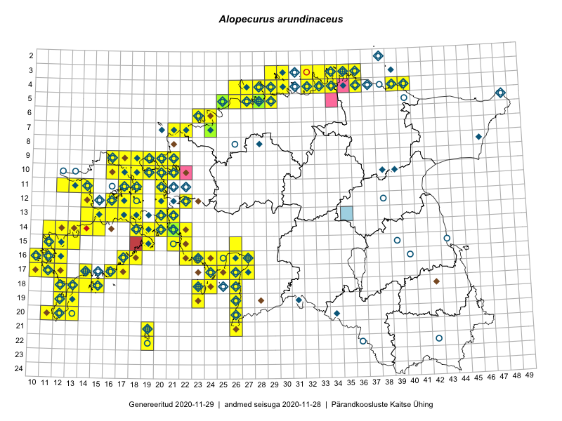

Alopecurus arundinaceus — mustjas rebasesaba
Poaceae :: Alopecurus arundinaceus Poir. (463); Alopecurus ventricosus Pers. (295); Alopecurus nigricans Hornem. (11)

Kaart põhineb 1000 kirjel:
vaatlusi 586
herbaareksemplare 183
PKÜ kirjeid1 175
ELFi kirjeid2 54
LVA kirjeid3 2
Taime kaasaegsed ja ajaloolised leiukohad asuvad 158 ruudus.
Tingmärgid ja leidudega ruutude arvud periooditi uues (u) ja 2005 andmestikus (v)
| █ | vahemik | u4 | v5 |
|---|---|---|---|
| █ | 2006–2020 | 120 | – |
| ◆/◇ | 1971–2005 | 126 | 109 |
| ○ | 1921–1970 | 82 | 10 |
| + | kuni 1920 | 7 | 0 |
| × | hävinud | – | 0 |
| ? | kaheldav | – | 0 |
| Ruut | Leidja(d) | Leiuaeg | Kirje |
|---|---|---|---|
| 14-22 | Ott Luuk, Meeli Mesipuu | 2020-08-30 | PKÜ: 20615 |
| 03-34 | Toomas Kukk, Ott Luuk, Kersti Tambets, Sten Mander, Kristine Fenske, Maie Itse | 2020-08-19 | ruut/ala: Alopecurus arundinaceus Poir. |
| 13-15 | Ott Luuk | 2020-08-06 | ruut/ala: Alopecurus arundinaceus Poir. |
| 16-17 | Mari Reitalu, Sirje Azarov, Anne Teigamägi | 2020-07-22 | ruut/ala: Alopecurus arundinaceus Poir. |
| 17-11 | Rein Kalamees, Ott Luuk | 2020-07-03 | PKÜ: 20451 |
| 17-14 | Peedu Saar, Toomas Kukk | 2020-07-03 | ruut/ala: Alopecurus arundinaceus Poir. |
| 19-12 | Toomas Kukk | 2020-07-02 | PKÜ: 20528 |
| 17-11 | Ott Luuk, Rein Kalamees | 2020-07-02 | PKÜ: 20231 |
| 17-10;17-11 | Peedu Saar | 2020-07-01 | PKÜ: 20470 |
| 14-22 | Ott Luuk, Rein Kalamees | 2020-06-30 | PKÜ: 20588 |
| 04-28 | Ott Luuk | 2020-06-22 | ruut/ala: Alopecurus arundinaceus Poir. |
| 16-12 | Mari Reitalu | 2020-06-18 | punkt: Alopecurus arundinaceus Poir. |
| 05-26 | Toomas Kukk, Martin Tikk | 2020-06-16 | PKÜ: 20848 |
| 03-34 | Ene Kook, Peedu Saar | 2020-06-08 | PKÜ: 20292 |
| 04-30 | Kadri Prants | 2020-06-06 | punkt: Alopecurus arundinaceus Poir. |
| 12-18 | Toomas Kukk, Ott Luuk, Peeter Pärn | 2020-05-29–2020-05-31 | ruut/ala: Alopecurus arundinaceus Poir. |
| 09-18 | Ott Luuk | 2019-09-17 | ruut/ala: Alopecurus arundinaceus Poir. |
| 15-13 | Sirje Azarov, Mari Reitalu | 2019-08-31 | ELF: 9 |
| 15-13 | Mari Reitalu, Sirje Azarov | 2019-08-31 | ruut/ala: Alopecurus arundinaceus Poir. |
| 03-32 | Ott Luuk, Jaak-Albert Metsoja | 2019-08-07 | ruut/ala: Alopecurus arundinaceus Poir. |
| 04-33 | Ott Luuk, Jaak-Albert Metsoja | 2019-08-07 | ruut/ala: Alopecurus arundinaceus Poir. |
| 04-36 | Meeli Mesipuu | 2019-08-06–2019-08-07 | ruut/ala: Alopecurus arundinaceus Poir. |
| 03-34 | Rein Kalamees, Toomas Kukk | 2019-08-06 | ruut/ala: Alopecurus arundinaceus Poir. |
| 04-34 | Rein Kalamees, Toomas Kukk | 2019-08-06 | ruut/ala: Alopecurus arundinaceus Poir. |
| 04-30 | Peedu Saar, Timo Luhamäe | 2019-08-06 | ruut/ala: Alopecurus arundinaceus Poir. |
| 04-33 | Rein Kalamees | 2019-07-14 | ruut/ala: Alopecurus arundinaceus Poir. |
| 03-33 | Rein Kalamees | 2019-07-14 | ruut/ala: Alopecurus arundinaceus Poir. |
| 13-21 | Ott Luuk, Toomas Kukk, Thea Kull | 2019-06-25 | ruut/ala: Alopecurus arundinaceus Poir. |
| 16-27 | Indrek Tammekänd, Liine Tammekänd | 2019-06-14 | punkt: Alopecurus arundinaceus Poir. |
| 05-28 | Thea Kull | 2019-06-11 | TAA0148051: Alopecurus arundinaceus Poir. |
| 15-26 | Indrek Tammekänd | 2019-06-05 | ruut/ala: Alopecurus arundinaceus Poir. |
| 12-16 | Toomas Kukk, Indrek Tammekänd | 2019-06-03 | ruut/ala: Alopecurus arundinaceus Poir. |
| 12-18 | Toomas Kukk, Indrek Tammekänd, Peeter Pärn | 2019-06-01 | ruut/ala: Alopecurus arundinaceus Poir. |
| 12-18 | Toomas Kukk, Indrek Tammekänd | 2019-06-01 | ruut/ala: Alopecurus arundinaceus Poir. |
| 11-18 | Toomas Kukk, Indrek Tammekänd | 2019-06-01 | ruut/ala: Alopecurus arundinaceus Poir. |
| 12-18 | Toomas Kukk, Peeter Pärn | 2018-09-15 | ruut/ala: Alopecurus arundinaceus Poir. |
| 04-28 | Ott Luuk | 2018-09-07 | ruut/ala: Alopecurus arundinaceus Poir. |
| 04-33 | Peedu Saar, Toomas Kukk | 2018-08-08 | ruut/ala: Alopecurus arundinaceus Poir. |
| 10-18 | Toomas Kukk, Meeli Mesipuu | 2018-07-11 | ruut/ala: Alopecurus arundinaceus Poir. |
| 10-17 | Toomas Kukk | 2018-07-10 | ruut/ala: Alopecurus arundinaceus Poir. |
| 10-18 | Toomas Kukk | 2018-07-10 | ruut/ala: Alopecurus arundinaceus Poir. |
| 10-17 | Peedu Saar | 2018-07-10 | ruut/ala: Alopecurus arundinaceus Poir. |
| 11-18 | Toomas Kukk | 2018-07-09 | ruut/ala: Alopecurus arundinaceus Poir. |
| 11-18 | Peedu Saar | 2018-07-09 | ruut/ala: Alopecurus arundinaceus Poir. |
| 06-23 | Peedu Saar | 2018-07-05 | ruut/ala: Alopecurus arundinaceus Poir. |
| 06-23 | Ott Luuk, Meeli Mesipuu, Jaak-Albert Metsoja, Mari Metsoja, Peedu Saar | 2018-07-05 | ruut/ala: Alopecurus arundinaceus Poir. |
| 06-23 | Ott Luuk, Meeli Mesipuu, Jaak-Albert Metsoja, Mari Metsoja | 2018-07-05 | ruut/ala: Alopecurus arundinaceus Poir. |
| 06-23 | Ott Luuk, Meeli Mesipuu, Jaak-Albert Metsoja, Mari Metsoja, Peedu Saar | 2018-07-04–2018-07-06 | ruut/ala: Alopecurus arundinaceus Poir. |
| 19-26 | Iris Reinula | 2018-06-15 | punkt: Alopecurus arundinaceus Poir. |
| 18-23 | Indrek Tammekänd | 2018-05-31–2018-06-02 | ruut/ala: Alopecurus arundinaceus Poir. |
| 12-18 | Toomas Kukk, Ilmar Uibopuu, Mari Reitalu | 2018-05-27 | ruut/ala: Alopecurus arundinaceus Poir. |
| 13-18 | Toomas Kukk, Ilmar Uibopuu | 2018-05-26 | ruut/ala: Alopecurus arundinaceus Poir. |
| 14-20 | Toomas Kukk, Ilmar Uibopuu | 2018-05-26 | ruut/ala: Alopecurus arundinaceus Poir. |
| 15-22 | Toomas Kukk, Ilmar Uibopuu | 2018-05-25 | ruut/ala: Alopecurus arundinaceus Poir. |
| 15-21 | Toomas Kukk, Ilmar Uibopuu | 2018-05-25 | ruut/ala: Alopecurus arundinaceus Poir. |
| 15-21 | Toomas Kukk, Ilmar Uibopuu | 2018-05-25 | ruut/ala: Alopecurus arundinaceus Poir. |
| 16-24 | Indrek Tammekänd | 2017-10-11 | ruut/ala: Alopecurus arundinaceus Poir. |
| 03-29 | Toomas Kukk | 2017-09-29 | ruut/ala: Alopecurus arundinaceus Poir. |
| 03-30 | Peedu Saar | 2017-09-29 | ruut/ala: Alopecurus arundinaceus Poir. |
| 09-16 | Ott Luuk, Peedu Saar | 2017-09-14–2017-09-15 | ruut/ala: Alopecurus arundinaceus Poir. |
| 11-14 | Ott Luuk, Peedu Saar | 2017-09-13 | ruut/ala: Alopecurus arundinaceus Poir. |
| 11-12 | Toomas Kukk, Indrek Tammekänd | 2017-09-12 | ruut/ala: Alopecurus arundinaceus Poir. |
| 11-13 | Toomas Kukk, Indrek Tammekänd | 2017-09-12 | ruut/ala: Alopecurus arundinaceus Poir. |
| 09-17 | Peedu Saar, Ott Luuk | 2017-09-12 | ruut/ala: Alopecurus arundinaceus Poir. |
| 10-18 | Ott Luuk, Peedu Saar | 2017-09-12 | ruut/ala: Alopecurus arundinaceus Poir. |
| 11-17 | Toomas Kukk, Indrek Tammekänd | 2017-09-11 | ruut/ala: Alopecurus arundinaceus Poir. |
| 05-27 | Peedu Saar, Timo Luhamäe | 2017-08-10 | ruut/ala: Alopecurus arundinaceus Poir. |
| 05-26 | Peedu Saar, Timo Luhamäe | 2017-08-10 | ruut/ala: Alopecurus arundinaceus Poir. |
| 07-24 | Toomas Kukk, Ilmar Uibopuu | 2017-07-30 | ruut/ala: Alopecurus arundinaceus Poir. |
| 07-22 | Toomas Kukk, Ilmar Uibopuu | 2017-07-29 | ruut/ala: Alopecurus arundinaceus Poir. |
| 06-23 | Toomas Kukk | 2017-07-27 | ruut/ala: Alopecurus arundinaceus Poir. |
| 06-23 | Toomas Kukk | 2017-07-27 | ruut/ala: Alopecurus arundinaceus Poir. |
| 06-24 | Ilmar Uibopuu, Kadri Kuusksalu | 2017-07-27 | ruut/ala: Alopecurus arundinaceus Poir. |
| 04-27 | Peedu Saar | 2017-07-20 | ruut/ala: Alopecurus arundinaceus Poir. |
| 04-26 | Ott Luuk | 2017-07-20 | ruut/ala: Alopecurus arundinaceus Poir. |
| 15-18 | Heete Ausmeel, Triin Edovald, Evelin Laanest, Ilmar Uibopuu, Marko Vainu | 2017-07-06 | LVA: -1477581420 |
| 12-18 | Toomas Kukk, Peeter Pärn | 2017-06-15 | ruut/ala: Alopecurus arundinaceus Poir. |
| 12-18 | Toomas Kukk, Peeter Pärn | 2017-06-15 | ruut/ala: Alopecurus arundinaceus Poir. |
| 11-18 | Toomas Kukk, Peeter Pärn | 2017-06-15 | ruut/ala: Alopecurus arundinaceus Poir. |
| 12-18 | Peedu Saar, Ilmar Uibopuu | 2017-06-15 | ruut/ala: Alopecurus arundinaceus Poir. |
| 12-18 | Peedu Saar, Ilmar Uibopuu | 2017-06-15 | ruut/ala: Alopecurus arundinaceus Poir. |
| 12-18 | Peedu Saar, Ilmar Uibopuu | 2017-06-15 | ruut/ala: Alopecurus arundinaceus Poir. |
| 03-29 | Ulvi Selgis | 2017-06-14 | LVA: -2125277764 |
| 07-24 | Peedu Saar, Ott Luuk | 2017-05-12 | punkt: Alopecurus arundinaceus Poir. |
| 07-24 | Peedu Saar, Ott Luuk | 2017-05-12 | ruut/ala: Alopecurus arundinaceus Poir. |
| 19-12 | Ott Luuk, Peedu Saar | 2016-10-07 | ruut/ala: Alopecurus arundinaceus Poir. |
| 22-19 | Ott Luuk, Meeli Mesipuu | 2016-09-10–2016-09-11 | ruut/ala: Alopecurus arundinaceus Poir. |
| 21-19 | Meeli Mesipuu, Ott Luuk | 2016-09-10 | ruut/ala: Alopecurus arundinaceus Poir. |
| 05-29 | Toomas Kukk, Sander Laherand | 2016-08-29 | ruut/ala: Alopecurus arundinaceus Poir. |
| 13-17 | Peedu Saar, Ott Luuk | 2016-08-29 | ruut/ala: Alopecurus arundinaceus Poir. |
| 13-18 | Mari Reitalu, Triin Reitalu | 2016-08-15 | ruut/ala: Alopecurus arundinaceus Poir. |
| 17-16 | Toomas Kukk, Meeli Mesipuu | 2016-08-12 | ruut/ala: Alopecurus arundinaceus Poir. |
| 14-14 | Peedu Saar, Maret Gerz | 2016-08-12 | ruut/ala: Alopecurus arundinaceus Poir. |
| 14-15 | Peedu Saar, Maret Gerz | 2016-08-11 | ruut/ala: Alopecurus arundinaceus Poir. |
| 13-15 | Maret Gerz, Peedu Saar | 2016-08-11 | ruut/ala: Alopecurus arundinaceus Poir. |
| 12-14 | Toomas Kukk, Meeli Mesipuu | 2016-08-10 | ruut/ala: Alopecurus arundinaceus Poir. |
| 14-18 | Mari Reitalu, Sirje Azarov | 2016-08-09–2016-08-10 | ruut/ala: Alopecurus arundinaceus Poir. |
| 10-16 | Meeli Mesipuu, Maret Gerz | 2016-08-09 | ruut/ala: Alopecurus arundinaceus Poir. |
| 20-12 | Mari Reitalu, Sirje Azarov | 2016-08-08 | ruut/ala: Alopecurus arundinaceus Poir. |
| 11-17 | Maret Gerz, Meeli Mesipuu | 2016-08-08 | ruut/ala: Alopecurus arundinaceus Poir. |
| 18-13 | Mari Reitalu, Sirje Azarov | 2016-07-31 | ruut/ala: Alopecurus arundinaceus Poir. |
| 04-30 | Sander Laherand, Eerik Leibak | 2016-07-29 | ruut/ala: Alopecurus arundinaceus Poir. |
| 04-40 | Tiit Hallikma, Ott Luuk | 2016-07-28 | ruut/ala: Alopecurus arundinaceus Poir. |
| 03-32 | Meeli Mesipuu, Timo Luhamäe | 2016-07-28 | ruut/ala: Alopecurus arundinaceus Poir. |
| 19-23 | Karin Kaljund, Kaire Lanno, Indrek Melts | 2016-07-28 | ruut/ala: Alopecurus arundinaceus Poir. |
| 04-39 | Hannes Pehlak, Toomas Kukk, Susanna Vain | 2016-07-28 | ruut/ala: Alopecurus arundinaceus Poir. |
| 04-32 | Peedu Saar, Timo Luhamäe | 2016-07-26 | ruut/ala: Alopecurus arundinaceus Poir. |
| 03-35 | Ott Luuk, Sander Laherand, Nele Jõessar | 2016-07-26 | ruut/ala: Alopecurus arundinaceus Poir. |
| 04-36 | Meeli Mesipuu, Liina Oja | 2016-07-26 | ruut/ala: Alopecurus arundinaceus Poir. |
| 03-36 | Meeli Mesipuu, Liina Oja | 2016-07-26 | ruut/ala: Alopecurus arundinaceus Poir. |
| 18-24 | Karin Kaljund, Kaire Lanno, Indrek Melts | 2016-07-26 | ruut/ala: Alopecurus arundinaceus Poir. |
| 03-34 | Hannes Pehlak, Toomas Kukk | 2016-07-26 | ruut/ala: Alopecurus arundinaceus Poir. |
| 04-34 | Hannes Pehlak, Toomas Kukk | 2016-07-26 | ruut/ala: Alopecurus arundinaceus Poir. |
| 04-29 | Sander Laherand, Tõnu Ploompuu, Nele Jõessar | 2016-07-25 | ruut/ala: Alopecurus arundinaceus Poir. |
| 04-28 | Sander Laherand, Tõnu Ploompuu, Nele Jõessar | 2016-07-25 | ruut/ala: Alopecurus arundinaceus Poir. |
| 17-26 | Indrek Tammekänd | 2016-07-25 | ruut/ala: Alopecurus arundinaceus Poir. |
| 20-26 | Sirje Azarov, Indrek Tammekänd | 2016-07-18 | ruut/ala: Alopecurus arundinaceus Poir. |
| 19-26 | Ott Luuk, Hannes Pehlak | 2016-07-18 | ruut/ala: Alopecurus arundinaceus Poir. |
| 17-27 | Indrek Tammekänd | 2016-07-12 | ruut/ala: Alopecurus arundinaceus Poir. |
| 09-18 | Toomas Kukk, Sander Laherand | 2016-07-07 | ruut/ala: Alopecurus arundinaceus Poir. |
| 07-24 | Thea Kull, Helle Mäemets | 2016-07-07 | ruut/ala: Alopecurus arundinaceus Poir. |
| 10-18 | Sander Laherand, Toomas Kukk | 2016-07-07 | ruut/ala: Alopecurus arundinaceus Poir. |
| 09-19 | Rein Kalamees, Liina Oja | 2016-07-07 | ruut/ala: Alopecurus arundinaceus Poir. |
| 10-20 | Peedu Saar, Timo Luhamäe | 2016-07-07 | ruut/ala: Alopecurus arundinaceus Poir. |
| 09-20 | Peedu Saar, Timo Luhamäe | 2016-07-07 | ruut/ala: Alopecurus arundinaceus Poir. |
| 07-21 | Meeli Mesipuu | 2016-07-07 | ruut/ala: Alopecurus arundinaceus Poir. |
| 07-24 | Helle Mäemets | 2016-07-07 | TAA2004331: Alopecurus arundinaceus Poir. |
| 11-20 | Aat Sarv, Maret Gerz | 2016-07-07 | ruut/ala: Alopecurus arundinaceus Poir. |
| 17-24 | Tiit Hallikma, Tõnu Ploompuu | 2016-07-06 | ruut/ala: Alopecurus arundinaceus Poir. |
| 05-25 | Sander Laherand, Toomas Kukk | 2016-07-05 | ruut/ala: Alopecurus arundinaceus Poir. |
| 13-21 | Aat Sarv, Maret Gerz | 2016-07-05 | ruut/ala: Alopecurus arundinaceus Poir. |
| 16-23 | Peedu Saar, Timo Luhamäe, Johannes Kõdar | 2016-07-04 | ruut/ala: Alopecurus arundinaceus Poir. |
| 14-21 | Mari Reitalu, Oliver Parrest | 2016-07-04 | ruut/ala: Alopecurus arundinaceus Poir. |
| 14-22 | Mari Reitalu, Oliver Parrest | 2016-07-04 | ruut/ala: Alopecurus arundinaceus Poir. |
| 15-26 | Aat Sarv, Maret Gerz | 2016-07-04 | ruut/ala: Alopecurus arundinaceus Poir. |
| 15-19 | Mari Reitalu, Triin Reitalu | 2016-06-30 | ruut/ala: Alopecurus arundinaceus Poir. |
| 14-19 | Meeli Mesipuu | 2016-06-29 | ruut/ala: Alopecurus arundinaceus Poir. |
| 19-26 | Indrek Tammekänd | 2016-06-29 | ruut/ala: Alopecurus arundinaceus Poir. |
| 14-21 | Kai Vellak | 2016-06-28 | TU283342: Alopecurus arundinaceus Poir. |
| 14-21 | Kai Vellak | 2016-06-28 | TU283343: Alopecurus arundinaceus Poir. |
| 09-19 | Rein Kalamees | 2016-06-11 | ruut/ala: Alopecurus arundinaceus Poir. |
| 18-26 | Ott Luuk, Peedu Saar | 2016-06-10 | ruut/ala: Alopecurus arundinaceus Poir. |
| 21-26 | Thea Kull, Peedu Saar | 2016-06-07 | ruut/ala: Alopecurus arundinaceus Poir. |
| 19-26 | Peedu Saar, Thea Kull | 2016-06-07 | ruut/ala: Alopecurus arundinaceus Poir. |
| 20-26 | Peedu Saar, Thea Kull | 2016-06-06 | ruut/ala: Alopecurus arundinaceus Poir. |
| 17-26 | Toomas Kukk, Tiit Hallikma | 2016-06-04 | ruut/ala: Alopecurus arundinaceus Poir. |
| 04-27 | Toomas Kukk | 2016-05-25 | ruut/ala: Alopecurus arundinaceus Poir. |
| 04-26 | Peedu Saar, Thea Kull | 2016-05-25 | ruut/ala: Alopecurus arundinaceus Poir. |
| 17-24 | Indrek Tammekänd | 2016-05-23 | ruut/ala: Alopecurus arundinaceus Poir. |
| 04-39 | Ott Luuk, Tiit Hallikma | 2016-05-19 | ruut/ala: Alopecurus arundinaceus Poir. |
| 15-22 | Toomas Kukk, Peedu Saar | 2016-05-14 | ruut/ala: Alopecurus arundinaceus Poir. |
| 10-18 | Toomas Kukk, Peedu Saar | 2016-05-13 | ruut/ala: Alopecurus arundinaceus Poir. |
| 09-18 | Toomas Kukk, Peedu Saar | 2016-05-13 | ruut/ala: Alopecurus arundinaceus Poir. |
| 09-19 | Toomas Kukk, Peedu Saar | 2016-05-13 | ruut/ala: Alopecurus arundinaceus Poir. |
| 09-20 | Toomas Kukk, Peedu Saar | 2016-05-13 | ruut/ala: Alopecurus arundinaceus Poir. |
| 20-26 | Indrek Tammekänd | 2016-05-10 | ruut/ala: Alopecurus arundinaceus Poir. |
| 15-12 | Toomas Kukk, Eerik Leibak | 2015-10-14 | PKÜ: 19196 |
| 16-11 | Peedu Saar, Ott Luuk | 2015-10-14 | ruut/ala: Alopecurus arundinaceus Poir. |
| 04-33 | Rein Kalamees, Kersti Püssa | 2015-09-12 | ruut/ala: Alopecurus arundinaceus Poir. |
| 03-36 | Rein Kalamees, Kersti Püssa | 2015-09-02 | ruut/ala: Alopecurus arundinaceus Poir. |
| 04-32 | Rein Kalamees, Kersti Püssa | 2015-08-31 | ruut/ala: Alopecurus arundinaceus Poir. |
| 16-22 | Indrek Tammekänd, Vilma Kuusk | 2015-08-30 | ruut/ala: Alopecurus arundinaceus Poir. |
| 12-22 | Toomas Kukk, Tiit Hallikma | 2015-08-26 | PKÜ: 18603 |
| 12-22 | Ott Luuk, Peedu Saar | 2015-08-24 | ruut/ala: Alopecurus arundinaceus Poir. |
| 16-10 | Sirje Azarov, Mari Reitalu | 2015-08-22 | ruut/ala: Alopecurus arundinaceus Poir. |
| 10-21 | Tõnu Ploompuu | 2015-08-21–2015-08-23 | ruut/ala: Alopecurus arundinaceus Poir. |
| 19-12 | Oliver Parrest | 2015-08-18 | ruut/ala: Alopecurus arundinaceus Poir. |
| 16-22 | Maret Gerz, Leena Gerz | 2015-08-16 | ruut/ala: Alopecurus arundinaceus Poir. |
| 15-22 | Maret Gerz, Leena Gerz | 2015-08-15 | ruut/ala: Alopecurus arundinaceus Poir. |
| 17-16 | Sirje Azarov, Aira Alasi | 2015-08-12 | ruut/ala: Alopecurus arundinaceus Poir. |
| 17-24 | Maret Gerz, Leena Gerz | 2015-08-12 | ruut/ala: Alopecurus arundinaceus Poir. |
| 17-24 | Maret Gerz, Leena Gerz | 2015-08-12 | ruut/ala: Alopecurus arundinaceus Poir. |
| 09-16 | Toomas Kukk, Eerik Leibak | 2015-08-11 | ruut/ala: Alopecurus arundinaceus Poir. |
| 13-14 | Toomas Kukk, Eerik Leibak | 2015-08-10 | ruut/ala: Alopecurus arundinaceus Poir. |
| 13-15 | Toomas Kukk, Eerik Leibak | 2015-08-10 | ruut/ala: Alopecurus arundinaceus Poir. |
| 04-28 | Tiina Elvisto, Maria Ksenofontov | 2015-08-09 | ruut/ala: Alopecurus arundinaceus Poir. |
| 16-25 | Maret Gerz, Leena Gerz | 2015-08-09 | ruut/ala: Alopecurus arundinaceus Poir. |
| 16-10 | Mari Reitalu, Oliver Parrest | 2015-08-04 | ruut/ala: Alopecurus arundinaceus Poir. |
| 17-10 | Mari Reitalu, Oliver Parrest | 2015-08-04 | ruut/ala: Alopecurus arundinaceus Poir. |
| 18-12 | Mari Reitalu, Sirje Azarov, Oliver Parrest | 2015-08-02 | ruut/ala: Alopecurus arundinaceus Poir. |
| 15-13 | Mari Reitalu, Oliver Parrest | 2015-07-24 | ruut/ala: Alopecurus arundinaceus Poir. |
| 17-12 | Mari Reitalu, Triin Reitalu | 2015-07-22–2015-07-31 | ruut/ala: Alopecurus arundinaceus Poir. |
| 14-18 | Elle Rajandu, Karin Kikas | 2015-07-21–2015-07-24 | ruut/ala: Alopecurus arundinaceus Poir. |
| 14-13 | Mari Reitalu, Oliver Parrest | 2015-07-21 | ruut/ala: Alopecurus arundinaceus Poir. |
| 15-12 | Mari Reitalu, Oliver Parrest | 2015-07-21 | ruut/ala: Alopecurus arundinaceus Poir. |
| 14-12 | Mari Reitalu, Oliver Parrest | 2015-07-21 | ruut/ala: Alopecurus arundinaceus Poir. |
| 04-40 | Kaili Orav, Silvia Pihu | 2015-07-21 | ruut/ala: Alopecurus arundinaceus Poir. |
| 03-30 | Kadi-Liis Kesler, Maria Ksenofontov | 2015-07-20–2015-07-21 | ruut/ala: Alopecurus arundinaceus Poir. |
| 10-20 | Tõnu Ploompuu, Anna-Grete Rebane, Hanna-Eliisa Luts | 2015-07-20 | ruut/ala: Alopecurus arundinaceus Poir. |
| 03-29 | Kadi-Liis Kesler, Maria Ksenofontov | 2015-07-20 | ruut/ala: Alopecurus arundinaceus Poir. |
| 15-11 | Mari Reitalu, Oliver Parrest | 2015-07-16 | ruut/ala: Alopecurus arundinaceus Poir. |
| 14-11 | Mari Reitalu, Oliver Parrest | 2015-07-14 | ruut/ala: Alopecurus arundinaceus Poir. |
| 09-21 | Kadi-Liis Kesler, Tõnu Ploompuu | 2015-07-14 | ruut/ala: Alopecurus arundinaceus Poir. |
| 13-20 | Meeli Mesipuu | 2015-07-13 | ruut/ala: Alopecurus arundinaceus Poir. |
| 13-20 | Peedu Saar, Elle Roosaluste | 2015-07-12 | ruut/ala: Alopecurus arundinaceus Poir. |
| 13-16 | Meeli Mesipuu | 2015-07-09 | ruut/ala: Alopecurus arundinaceus Poir. |
| 13-17 | Meeli Mesipuu, Kadri Tali | 2015-07-08 | ruut/ala: Alopecurus arundinaceus Poir. |
| 16-17 | Meeli Mesipuu, Kadri Tali | 2015-07-06 | ruut/ala: Alopecurus arundinaceus Poir. |
| 16-18 | Meeli Mesipuu, Kadri Tali | 2015-07-06 | ruut/ala: Alopecurus arundinaceus Poir. |
| 16-17 | Kadri Tali, Meeli Mesipuu | 2015-07-06 | ruut/ala: Alopecurus arundinaceus Poir. |
| 21-19 | Silvia Pihu | 2015-07-01 | ruut/ala: Alopecurus arundinaceus Poir. |
| 19-13 | Oliver Parrest | 2015-07-01 | ruut/ala: Alopecurus arundinaceus Poir. |
| 15-22 | Vilma Kuusk, Indrek Tammekänd | 2015-06-30 | ruut/ala: Alopecurus arundinaceus Poir. |
| 11-13 | Eeva-Maria Jeletsky, Tarmo Niitla | 2015-06-28 | ruut/ala: Alopecurus arundinaceus Poir. |
| 11-12 | Eeva-Maria Jeletsky, Tarmo Niitla | 2015-06-27 | ruut/ala: Alopecurus arundinaceus Poir. |
| 14-21 | Peedu Saar | 2015-06-26 | TAA0116364: Alopecurus arundinaceus Poir. |
| 14-20 | Meeli Mesipuu, Kadri Tali | 2015-06-26 | ruut/ala: Alopecurus arundinaceus Poir. |
| 09-20 | Kadi-Liis Kesler | 2015-06-25–2015-10-11 | ruut/ala: Alopecurus arundinaceus Poir. |
| 13-18 | Meeli Mesipuu, Kadri Tali | 2015-06-25 | ruut/ala: Alopecurus arundinaceus Poir. |
| 16-11 | Sirje Azarov, Mari Reitalu | 2015-06-22–2015-06-23 | ruut/ala: Alopecurus arundinaceus Poir. |
| 16-10 | Sirje Azarov, Mari Reitalu | 2015-06-22 | ruut/ala: Alopecurus arundinaceus Poir. |
| 07-24 | Erkki Otsman, Sergei Smirnov | 2015-06-22 | ruut/ala: Alopecurus arundinaceus Poir. |
| 15-19 | Meeli Mesipuu | 2015-06-21 | ruut/ala: Alopecurus arundinaceus Poir. |
| 12-17 | Eeva-Maria Jeletsky, Tarmo Niitla | 2015-06-21 | ruut/ala: Alopecurus arundinaceus Poir. |
| 11-17 | Eeva-Maria Jeletsky, Tarmo Niitla | 2015-06-20 | ruut/ala: Alopecurus arundinaceus Poir. |
| 16-26 | Meeli Mesipuu | 2015-06-19 | ruut/ala: Alopecurus arundinaceus Poir. |
| 04-39 | Kaili Orav, Silvia Pihu | 2015-06-19 | ruut/ala: Alopecurus arundinaceus Poir. |
| 14-18 | Hannes Pehlak | 2015-06-17–2015-06-21 | ruut/ala: Alopecurus arundinaceus Poir. |
| 16-27 | Meeli Mesipuu | 2015-06-17 | ruut/ala: Alopecurus arundinaceus Poir. |
| 11-18 | Eeva-Maria Jeletsky, Tarmo Niitla | 2015-06-17 | ruut/ala: Alopecurus arundinaceus Poir. |
| 18-15 | Ott Luuk, Elle Roosaluste, Jaak-Albert Metsoja | 2015-06-16 | ruut/ala: Alopecurus arundinaceus Poir. |
| 04-30 | Rein Kalamees, Kersti Püssa | 2015-06-07 | ruut/ala: Alopecurus arundinaceus Poir. |
| 06-23 | Mari Metsoja, Jaak-Albert Metsoja, Ott Luuk | 2015-06-04 | ruut/ala: Alopecurus arundinaceus Poir. |
| 15-22 | Indrek Tammekänd, Jana Galadi | 2015-06-03 | ruut/ala: Alopecurus arundinaceus Poir. |
| 19-23 | Ott Luuk | 2015-05-30 | ruut/ala: Alopecurus arundinaceus Poir. |
| 05-25 | Jaak-Albert Metsoja | 2015-05-30 | TAA0140401: Alopecurus arundinaceus Poir. |
| 05-25 | Jaak-Albert Metsoja | 2015-05-30 | TAA0140407: Alopecurus arundinaceus Poir. |
| 18-23 | Ott Luuk, Elle Roosaluste | 2015-05-29 | ruut/ala: Alopecurus arundinaceus Poir. |
| 11-17 | Peedu Saar, Toomas Kukk | 2015-05-28 | ruut/ala: Alopecurus arundinaceus Poir. |
| 12-16 | Meeli Mesipuu, Timo Luhamäe | 2015-05-28 | ruut/ala: Alopecurus arundinaceus Poir. |
| 09-16 | Peedu Saar, Toomas Kukk | 2015-05-27 | ruut/ala: Alopecurus arundinaceus Poir. |
| 11-13 | Meeli Mesipuu, Timo Luhamäe | 2015-05-27 | ruut/ala: Alopecurus arundinaceus Poir. |
| 10-16 | Peedu Saar, Toomas Kukk | 2015-05-26–2017-05-27 | ruut/ala: Alopecurus arundinaceus Poir. |
| 10-17 | Peedu Saar, Toomas Kukk | 2015-05-26 | ruut/ala: Alopecurus arundinaceus Poir. |
| 11-18 | Meeli Mesipuu, Timo Luhamäe | 2015-05-26 | ruut/ala: Alopecurus arundinaceus Poir. |
| 16-11 | Mari Reitalu | 2015-05-22 | ruut/ala: Alopecurus arundinaceus Poir. |
| 17-25 | Ott Luuk, Eerik Leibak | 2015-05-21 | ruut/ala: Alopecurus arundinaceus Poir. |
| 17-24 | Ott Luuk, Eerik Leibak | 2015-05-21 | ruut/ala: Alopecurus arundinaceus Poir. |
| 17-26 | Meeli Mesipuu | 2015-05-21 | ruut/ala: Alopecurus arundinaceus Poir. |
| 18-26 | Peedu Saar, Liina Oja | 2015-05-20 | ruut/ala: Alopecurus arundinaceus Poir. |
| 16-27 | Indrek Tammekänd | 2015-05-13–2015-09-15 | ruut/ala: Alopecurus arundinaceus Poir. |
| 16-26 | Indrek Tammekänd | 2015-05-11–2015-07-27 | ruut/ala: Alopecurus arundinaceus Poir. |
| 14-20 | Meeli Mesipuu | 2015-05-09 | ruut/ala: Alopecurus arundinaceus Poir. |
| 07-22 | Marju Erit | 2015-05-01–2015-08-20 | ruut/ala: Alopecurus arundinaceus Poir. |
| 20-12 | Mari Reitalu, Triin Reitalu | 2014-08-17 | ruut/ala: Alopecurus arundinaceus Poir. |
| 20-11 | Mari Reitalu, Triin Reitalu | 2014-08-15–2014-08-17 | ruut/ala: Alopecurus arundinaceus Poir. |
| 10-20 | Ott Luuk, Peedu Saar | 2014-07-29 | ruut/ala: Alopecurus arundinaceus Poir. |
| 10-20 | Ott Luuk, Peedu Saar | 2014-07-29 | PKÜ: 18115 |
| 10-20 | Ott Luuk, Peedu Saar | 2014-07-29 | PKÜ: 18104 |
| 10-20 | Ott Luuk, Peedu Saar | 2014-07-29 | PKÜ: 18109 |
| 12-20 | Ott Luuk | 2014-07-24–2014-07-28 | ruut/ala: Alopecurus arundinaceus Poir. |
| 17-24 | Meeli Mesipuu | 2014-07-23 | PKÜ: 18122 |
| 17-24 | Meeli Mesipuu | 2014-07-23 | PKÜ: 18191 |
| 17-24 | Meeli Mesipuu | 2014-07-23 | PKÜ: 18138 |
| 03-35 | Thea Kull | 2014-07-18 | punkt: Alopecurus arundinaceus Poir. |
| 18-15 | Mari Reitalu | 2014-07-17 | ruut/ala: Alopecurus arundinaceus Poir. |
| 14-21 | Toomas Kukk, Peedu Saar | 2014-07-03 | ruut/ala: Alopecurus arundinaceus Poir. |
| 16-10 | Toomas Kukk | 2014-06-21–2014-06-22 | ruut/ala: Alopecurus arundinaceus Poir. |
| 18-14 | Toomas Kukk | 2014-06-18 | ruut/ala: Alopecurus arundinaceus Poir. |
| 03-29 | Ott Luuk, Mari Reitalu, Tõnu Ploompuu | 2014-06-01 | ruut/ala: Alopecurus arundinaceus Poir. |
| 03-30 | Mari Reitalu, Tõnu Ploompuu, Ott Luuk, Peedu Saar | 2014-06-01 | ruut/ala: Alopecurus arundinaceus Poir. |
| 09-18 | Ott Luuk, Toomas Kukk, Thea Kull, Peedu Saar | 2014-05-25 | ruut/ala: Alopecurus arundinaceus Poir. |
| 19-12 | Ott Luuk, Mari Reitalu, Thea Kull | 2014-05-23 | ruut/ala: Alopecurus arundinaceus Poir. |
| 16-27 | Meeli Mesipuu | 2013-08-06 | PKÜ: 20088 |
| 18-23 | Elin Soomets, Karin Kaljund | 2013-07-25 | punkt: Alopecurus arundinaceus Poir. |
| 18-23 | Elin Soomets, Karin Kaljund | 2013-07-25 | punkt: Alopecurus arundinaceus Poir. |
| 13-18 | Elin Soomets | 2013-07-24 | punkt: Alopecurus arundinaceus Poir. |
| 13-18 | Elin Soomets | 2013-07-24 | punkt: Alopecurus arundinaceus Poir. |
| 19-12 | Elin Soomets, Karin Kaljund | 2013-07-23 | punkt: Alopecurus arundinaceus Poir. |
| 18-23 | Elin Soomets, Karin Kaljund | 2013-07-23 | punkt: Alopecurus arundinaceus Poir. |
| 17-16 | Elin Soomets | 2013-07-23 | punkt: Alopecurus arundinaceus Poir. |
| 17-17 | Elin Soomets | 2013-07-23 | punkt: Alopecurus arundinaceus Poir. |
| 14-15 | Elin Soomets, Karin Kaljund | 2013-07-22 | punkt: Alopecurus arundinaceus Poir. |
| 13-15 | Elin Soomets, Karin Kaljund | 2013-07-18 | punkt: Alopecurus arundinaceus Poir. |
| 12-16 | Elin Soomets | 2013-07-18 | punkt: Alopecurus arundinaceus Poir. |
| 13-15 | Elin Soomets | 2013-07-18 | punkt: Alopecurus arundinaceus Poir. |
| 10-19 | Thea Kull | 2012-08-01 | punkt: Alopecurus arundinaceus Poir. |
| 17-11 | Mari Reitalu | 2012-06-28 | punkt: Alopecurus arundinaceus Poir. |
| 04-34 | Peedu Saar, Ott Luuk | 2011-09-07 | PKÜ: 17236 |
| 03-34 | Ott Luuk, Peedu Saar | 2011-09-07 | PKÜ: 17237 |
| 03-34 | Meeli Mesipuu | 2011-09-07 | PKÜ: 16983 |
| 03-34 | Meeli Mesipuu | 2011-09-06 | PKÜ: 16957 |
| 03-34 | Meeli Mesipuu, Thea Kull | 2011-08-28 | PKÜ: 17019 |
| 14-21 | Toomas Kukk, Meeli Mesipuu | 2011-07-01 | ruut/ala: Alopecurus arundinaceus Poir. |
| 16-17 | Kadri Tali | 2010-11-21 | ELF: 20344 |
| 04-33;04-34 | Jaak-Albert Metsoja, Mari Metsoja | 2010-08-03 | PKÜ: 16534 |
| 04-34 | Virve Sõber | 2010-07-04 | PKÜ: 16289 |
| 05-34 | Virve Sõber | 2010-07-04 | PKÜ: 16288 |
| 04-34 | Virve Sõber | 2010-07-04 | PKÜ: 16291 |
| 04-34;05-34 | Virve Sõber | 2010-07-04 | PKÜ: 16292 |
| 04-33 | Jaak-Albert Metsoja, Mari Metsoja | 2010-07-04 | PKÜ: 16366 |
| 05-34 | Virve Sõber, Inga Hiiesalu | 2010-07-03 | PKÜ: 16287 |
| 05-34 | Virve Sõber, Inga Hiiesalu | 2010-07-03 | PKÜ: 16282 |
| 04-33 | Kalle Sõber, Virve Sõber | 2010-06-23 | PKÜ: 16304 |
| 16-11 | Mari Reitalu | 2010-06-16 | ELF: 16219 |
| 12-14 | Meeli Mesipuu | 2009-08-21 | PKÜ: 15396 |
| 04-30 | Jane Toomla | 2009-08-05 | ELF: 12998 |
| 17-14 | Meeli Mesipuu | 2009-07-31 | PKÜ: 16013 |
| 10-22 | Meeli Mesipuu | 2009-07-22 | PKÜ: 15287 |
| 14-21 | Meeli Mesipuu | 2009-07-21 | PKÜ: 15878 |
| 11-20 | Meeli Mesipuu | 2009-07-20 | PKÜ: 15272 |
| 17-16 | Mari Reitalu, Reet Viira | 2009-06-26 | ELF: 1500 |
| 17-16 | Mari Reitalu | 2009-06-25 | ruut/ala: Alopecurus arundinaceus Poir. |
| 13-35 | Kertu Lõhmus, Maarja Kukk | 2009-06-23 | ELF: 12884 |
| 14-21 | Toomas Kukk | 2009-06-07 | ruut/ala: Alopecurus arundinaceus Poir. |
| 14-21 | Toomas Kukk | 2009-06-07 | ruut/ala: Alopecurus arundinaceus Poir. |
| 14-21 | Toomas Kukk | 2009-06-07 | ruut/ala: Alopecurus arundinaceus Poir. |
| 03-34 | Tanel Kosk, Toomas Kukk | 2008-07-31 | PKÜ: 14900 |
| 04-33 | Ott Luuk, Jaak-Albert Metsoja, Meeli Mesipuu | 2008-07-31 | PKÜ: 14859 |
| 04-33 | Meeli Mesipuu, Jaak-Albert Metsoja | 2008-07-29 | PKÜ: 15013 |
| 03-32 | Meeli Mesipuu, Jaak-Albert Metsoja | 2008-07-29 | PKÜ: 15032 |
| 13-21 | Toomas Kukk | 2008-07-04 | ruut/ala: Alopecurus arundinaceus Poir. |
| 14-21 | Toomas Kukk | 2008-07-03 | PKÜ: 15167 |
| 03-32 | Meeli Mesipuu, Mare Leis, Maarja Kukk | 2008-06-19 | PKÜ: 14933 |
| 03-32 | Meeli Mesipuu, Maarja Kukk | 2008-06-19 | PKÜ: 14952 |
| 03-32 | Vivika Meltsov, Ott Luuk | 2008-06-18 | PKÜ: 15001 |
| 15-11 | Mari Reitalu | 2007-08-16 | ruut/ala: Alopecurus arundinaceus Poir. |
| 16-11 | Mari Reitalu | 2007-08-07 | ruut/ala: Alopecurus arundinaceus Poir. |
| 04-33 | Meeli Mesipuu | 2007-07-29 | PKÜ: 13746 |
| 10-19 | Toomas Kukk, Mari Reitalu, Mare Leis | 2007-07-25 | ruut/ala: Alopecurus arundinaceus Poir. |
| 10-19 | Toomas Kukk, Mari Reitalu, Mare Leis | 2007-07-25 | ruut/ala: Alopecurus arundinaceus Poir. |
| 04-33 | Meeli Mesipuu, Katrin Jürgens | 2007-06-12 | PKÜ: 13727 |
| 04-33 | Meeli Mesipuu, Katrin Jürgens | 2007-06-12 | PKÜ: 13729 |
| 10-20 | Toomas Kukk | 2007-06-10 | ruut/ala: Alopecurus arundinaceus Poir. |
| 09-19 | Toomas Kukk, Elle Roosaluste | 2007-06-08 | ruut/ala: Alopecurus arundinaceus Poir. |
| 14-22 | Toomas Kukk, Tanel Kosk | 2006-08-25 | PKÜ: 12629 |
| 14-22 | Toomas Kukk, Tanel Kosk | 2006-08-25 | PKÜ: 12631 |
| 18-26;19-26 | Meeli Mesipuu, Ott Luuk, Erki Uustalu | 2006-08-22 | PKÜ: 12663 |
| 04-35 | Tsipe Aavik, Helen Toom | 2006-08-17 | PKÜ: 13098 |
| 16-18 | Mari Reitalu | 2006-08-06 | ruut/ala: Alopecurus arundinaceus Poir. |
| 15-22 | Toomas Kukk, Alexander Nikolaevitsch Sennikov | 2006-07-11 | ruut/ala: Alopecurus arundinaceus Poir. |
| 15-22 | Meeli Mesipuu, Karin Kikas | 2006-06-22 | PKÜ: 13462 |
| 15-22 | Meeli Mesipuu, Karin Kikas | 2006-06-22 | PKÜ: 13537 |
| 16-22 | Helen Toom, Katrin Jürgens | 2006-06-22 | PKÜ: 13489 |
| 16-23 | Heikki Luhamaa, Elle Roosaluste | 2006-06-12 | PKÜ: 12870 |
| 16-23 | Heikki Luhamaa, Elle Roosaluste | 2006-06-11 | PKÜ: 12793 |
| 20-13 | Mari Reitalu | 2006-05-27 | ruut/ala: Alopecurus arundinaceus Poir. |
| 18-25 | Vilma Kuusk | 2005-07-22 | ruut/ala: Alopecurus arundinaceus Poir. |
| 11-18 | Toomas Kukk, Aleksander Sennikov, Rein Kalamees, Raul Sulbi | 2005-07-15 | ruut/ala: Alopecurus arundinaceus Poir. |
| 11-13 | Toomas Kukk, Aleksander Sennikov, Rein Kalamees, Raul Sulbi | 2005-07-12 | ruut/ala: Alopecurus arundinaceus Poir. |
| 12-23 | Aveliina Helm, Katrin Jürgens | 2005-06-16 | PKÜ: 12278 |
| 12-23 | Aveliina Helm, Katrin Jürgens | 2005-06-16 | PKÜ: 12279 |
| 12-22 | Aveliina Helm, Katrin Jürgens | 2005-06-14 | PKÜ: 12272 |
| 03-34 | Meeli Mesipuu, Katrin Jürgens | 2005-06-08 | PKÜ: 11869 |
| 03-34 | Meeli Mesipuu, Katrin Jürgens | 2005-06-08 | PKÜ: 11871 |
| 03-34 | Meeli Mesipuu, Katrin Jürgens | 2005-06-08 | PKÜ: 11870 |
| 16-27 | Vilma Kuusk | 2005 | ruut/ala: Alopecurus arundinaceus Poir. |
| 16-26 | Vilma Kuusk | 2005 | ruut/ala: Alopecurus arundinaceus Poir. |
| 07-22 | Tõnu Ploompuu | 2005 | ruut/ala: Alopecurus ventricosus Pers. |
| 16-11 | Meeli Mesipuu, Katrin Jürgens | 2004-06-15 | PKÜ: 11805 |
| 16-11;17-11 | Meeli Mesipuu, Katrin Jürgens | 2004-06-13 | PKÜ: 11802 |
| 17-10;17-11 | Meeli Mesipuu, Katrin Jürgens | 2004-06-12 | PKÜ: 11792 |
| 16-10;16-11 | Meeli Mesipuu, Katrin Jürgens | 2004-06-12 | PKÜ: 11796 |
| 16-11;17-11 | Meeli Mesipuu, Katrin Jürgens | 2004-06-12 | PKÜ: 11800 |
| 16-11 | Meeli Mesipuu, Katrin Jürgens | 2004-06-12 | PKÜ: 11797 |
| 17-11 | Meeli Mesipuu, Katrin Jürgens | 2004-06-11 | PKÜ: 11789 |
| 11-13 | Elle Roosaluste | 2003-10-08 | PKÜ: 4190 |
| 10-20 | Tõnu Ploompuu | 2003-08-06–2003-08-09 | ruut/ala: Alopecurus ventricosus Pers. |
| 03-36 | Aveliina Helm, Katrin Jürgens | 2003-07-14 | PKÜ: 10926 |
| 13-17 | Toomas Kukk, Tõnu Feldmann | 2002-10-06 | PKÜ: 10095 |
| 14-18 | Toomas Kukk, Tõnu Feldmann | 2002-09-20 | PKÜ: 9403 |
| 13-18;14-18 | Toomas Kukk, Tõnu Feldmann | 2002-09-20 | PKÜ: 9400 |
| 03-36 | Vivika Meltsov, Katrin Jürgens | 2002-08-23 | PKÜ: 9997 |
| 03-36 | Meeli Mesipuu, Katrin Jürgens | 2002-08-11 | PKÜ: 9994 |
| 06-24 | Eerik Leibak, Esko Aikio | 2002-06-22 | ELF: 7803 |
| 08-28 | Urmas Laansoo | 2002 | ruut/ala: Alopecurus arundinaceus Poir. |
| 17-11 | Toomas Kukk, Kaupo Kohv | 2001-09-07 | PKÜ: 7343 |
| 17-12 | Toomas Kukk, Kaupo Kohv | 2001-09-06 | PKÜ: 7306 |
| 17-12 | Toomas Kukk, Kaupo Kohv | 2001-09-05 | PKÜ: 7301 |
| 18-13 | Toomas Kukk, Eerik Leibak | 2001-07-25 | PKÜ: 7479 |
| 20-11 | Toomas Kukk, Eerik Leibak | 2001-07-24 | PKÜ: 7465 |
| 20-11 | Toomas Kukk, Eerik Leibak | 2001-07-24 | PKÜ: 7466 |
| 14-22;15-22 | Toomas Kukk, Eerik Leibak | 2001-07-23 | ELF: 1440 |
| 14-22;15-22 | Toomas Kukk, Eerik Leibak | 2001-07-23 | PKÜ: 8382 |
| 17-14 | Toomas Kukk, Eerik Leibak | 2001-07-13 | ELF: 1938 |
| 17-14 | Toomas Kukk, Eerik Leibak | 2001-07-13 | PKÜ: 8265 |
| 19-28 | Toomas Kukk, Bert Holm | 2001-06-19 | PKÜ: 6993 |
| 10-20 | Toomas Kukk | 2001-06-07 | ruut/ala: Alopecurus arundinaceus Poir. |
| 17-16 | Tõnu Ploompuu | 2001 | punkt: Alopecurus ventricosus Pers. |
| 20-34 | Erki Uustalu, Tarmo Niitla | 2000-09-29 | PKÜ: 4378 |
| 12-16 | Toomas Kukk, Bert Holm | 2000-09-10 | PKÜ: 3908 |
| 13-15 | Toomas Kukk, Bert Holm | 2000-09-10 | PKÜ: 3900 |
| 09-16;10-16 | Toomas Kukk, Bert Holm | 2000-09-07 | PKÜ: 3867 |
| 09-17;10-17 | Toomas Kukk, Bert Holm | 2000-09-07 | PKÜ: 3857 |
| 09-17;10-16;10-17 | Toomas Kukk, Bert Holm | 2000-09-07 | PKÜ: 3856 |
| 12-14;12-15 | Toomas Kukk, Bert Holm | 2000-09-06 | PKÜ: 3812 |
| 11-14 | Toomas Kukk, Bert Holm | 2000-09-06 | PKÜ: 3825 |
| 04-27 | Urmas Laansoo | 2000-08-28–2000-08-29 | ruut/ala: Alopecurus arundinaceus Poir. |
| 04-31 | Mari Tobias, Laimi Truus | 2000-08-15 | PKÜ: 3692 |
| 16-23 | Aivo Lepp, Elle Roosaluste | 2000-08-14 | PKÜ: 2200 |
| 16-22;16-23 | Aivo Lepp, Elle Roosaluste | 2000-08-14 | PKÜ: 2199 |
| 16-23 | Aivo Lepp, Elle Roosaluste | 2000-08-14 | PKÜ: 2202 |
| 04-30 | Thea Kull | 2000-08-02–2000-08-10 | ruut/ala: Alopecurus ventricosus Pers. |
| 04-29 | Mari Tobias, Kersti Oras | 2000-07-29 | PKÜ: 3710 |
| 04-29 | Mari Tobias, Kersti Oras | 2000-07-28 | PKÜ: 3708 |
| 12-22 | Toomas Kukk, Bert Holm | 2000-07-26 | PKÜ: 2340 |
| 14-22 | Toomas Kukk, Aivo Lepp | 2000-07-19 | PKÜ: 1924 |
| 15-22 | Toomas Kukk, Aivo Lepp | 2000-07-18 | PKÜ: 1915 |
| 14-21 | Toomas Kukk, Aivo Lepp | 2000-07-17 | PKÜ: 1898 |
| 14-21 | Toomas Kukk, Aivo Lepp | 2000-07-17 | PKÜ: 1897 |
| 13-18 | Kadri Tali | 2000-07-15 | PKÜ: 4174 |
| 17-24 | Elle Roosaluste, Aiki Undrits | 2000-07-08 | PKÜ: 1892 |
| 17-25 | Elle Roosaluste, Aiki Undrits | 2000-07-07 | PKÜ: 1883 |
| 17-25 | Elle Roosaluste, Aiki Undrits | 2000-07-07 | PKÜ: 1880 |
| 17-24 | Elle Roosaluste, Aiki Undrits | 2000-07-07 | PKÜ: 1884 |
| 17-25 | Elle Roosaluste, Aiki Undrits | 2000-07-07 | PKÜ: 1881 |
| 17-26 | Malle Leht, Aivo Lepp | 2000-07-05 | PKÜ: 4944 |
| 20-26;21-26 | Anneli Tamm, Virve Sõber | 2000-07-01 | PKÜ: 1980 |
| 19-26;20-26 | Anneli Tamm, Virve Sõber | 2000-06-30 | PKÜ: 1988 |
| 19-26 | Anneli Tamm, Virve Sõber, Marju Erit | 2000-06-29 | PKÜ: 1985 |
| 19-26 | Anneli Tamm, Virve Sõber, Marju Erit | 2000-06-28 | PKÜ: 1987 |
| 19-26 | Anneli Tamm, Virve Sõber, Marju Erit | 2000-06-28 | PKÜ: 1986 |
| 14-19 | Toomas Kukk, Bert Holm | 2000-06-27 | PKÜ: 6628 |
| 14-20 | Toomas Kukk, Bert Holm | 2000-06-27 | PKÜ: 6625 |
| 14-19 | Toomas Kukk, Matis Mägi | 2000-06-25 | PKÜ: 6643 |
| 13-20;14-20 | Toomas Kukk, Kadri Tali | 2000-06-24 | PKÜ: 6610 |
| 13-18 | Toomas Kukk, Kadri Tali | 2000-06-21 | PKÜ: 6747 |
| 13-18 | Toomas Kukk, Kadri Tali | 2000-06-20 | PKÜ: 6729 |
| 05-28 | Laimi Truus | 2000-06-17 | PKÜ: 6781 |
| 12-21 | Toomas Kukk, Mari Reitalu, Elle Meier, Eerik Leibak | 2000-06-13 | PKÜ: 2451 |
| 12-20 | Toomas Kukk, Bert Holm | 2000-06-11 | PKÜ: 2276 |
| 12-20 | Toomas Kukk, Bert Holm | 2000-06-11 | PKÜ: 2277 |
| 14-20 | Anneli Tamm, Andres Kuresoo, Leho Luigujõe | 2000-06-09 | PKÜ: 2206 |
| 08-21;09-21 | Anneli Tamm, Bert Holm | 2000-06-05 | PKÜ: 2415 |
| 08-21 | Anneli Tamm, Bert Holm | 2000-06-05 | PKÜ: 2418 |
| 09-21 | Anneli Tamm, Bert Holm | 2000-06-05 | PKÜ: 2414 |
| 09-21 | Anneli Tamm, Priit Holtsmann | 2000-05-25 | PKÜ: 2502 |
| 09-20;09-21 | Anneli Tamm, Priit Holtsmann | 2000-05-25 | PKÜ: 2508 |
| 09-20 | Anneli Tamm, Priit Holtsmann | 2000-05-25 | PKÜ: 2493 |
| 10-21 | Anneli Tamm, Priit Holtsmann | 2000-05-24 | PKÜ: 2518 |
| 09-20 | Anneli Tamm, Priit Holtsmann | 2000-05-23 | PKÜ: 2497 |
| 10-21 | Anneli Tamm, Priit Holtsmann | 2000-05-23 | PKÜ: 2513 |
| 09-21 | Anneli Tamm, Priit Holtsmann | 2000-05-23 | PKÜ: 2467 |
| 09-20 | Anneli Tamm, Priit Holtsmann | 2000-05-23 | PKÜ: 2501 |
| 14-12;14-13 | Mari Reitalu, Tõnu Talvi | 1999-10-25 | PKÜ: 1255 |
| 15-19 | Silvia Sepp | 1999-10-15 | PKÜ: 1737 |
| 10-21;10-22 | Tõnu Ploompuu | 1999-10-08 | PKÜ: 452 |
| 11-22 | Merit Otsus, Kadri Tali | 1999-10-03 | PKÜ: 348 |
| 09-18 | Elle Puurmann | 1999-09-26 | PKÜ: 937 |
| 10-19 | Elle Puurmann | 1999-09-26 | PKÜ: 976 |
| 10-21;11-21 | Heikki Luhamaa, Reelika Rohtla | 1999-09-25 | PKÜ: 59 |
| 09-20 | Elle Puurmann | 1999-09-11 | PKÜ: 924 |
| 03-34 | Toomas Kukk, Rein Kalamees | 1999-09-06–1999-09-07 | ruut/ala: Alopecurus arundinaceus Poir. |
| 19-12 | Toomas Kukk, Eerik Leibak | 1999-09-02 | PKÜ: 1093 |
| 19-12 | Toomas Kukk, Eerik Leibak | 1999-09-02 | PKÜ: 1090 |
| 18-12 | Toomas Kukk, Alexandr Sennikov | 1999-08-21 | PKÜ: 1471 |
| 09-19 | Elle Puurmann | 1999-08-21 | PKÜ: 944 |
| 18-12 | Toomas Kukk, Andres Luhamaa, Katrin Heinsoo | 1999-08-20 | PKÜ: 1451 |
| 18-12 | Toomas Kukk, Alexandr Sennikov, Katrin Heinsoo | 1999-08-20 | PKÜ: 1453 |
| 18-12;18-13 | Toomas Kukk, Alexandr Sennikov, Katrin Heinsoo | 1999-08-19 | PKÜ: 1449 |
| 14-22 | Erki Uustalu, Reelika Rohtla, Malle Leht | 1999-08-19 | PKÜ: 1 |
| 19-12 | Toomas Kukk, Alexandr Sennikov | 1999-08-17 | PKÜ: 1072 |
| 18-13 | Toomas Kukk, Alexandr Sennikov | 1999-08-17 | PKÜ: 1067 |
| 18-13 | Toomas Kukk, Tõnu Feldmann | 1999-08-11 | PKÜ: 1295 |
| 18-13 | Toomas Kukk, Tõnu Feldmann | 1999-08-10 | PKÜ: 1275 |
| 18-12 | Toomas Kukk | 1999-08-10 | PKÜ: 1452 |
| 18-13 | Toomas Kukk, Eerik Leibak | 1999-08-09 | PKÜ: 1321 |
| 13-17 | Anneli Palo | 1999-08-05 | PKÜ: 1605 |
| 17-11 | Mare Leis, Anneli Tamm, Priit Holtsmann | 1999-07-30 | PKÜ: 1525 |
| 16-11;17-11 | Mare Leis, Anneli Tamm, Priit Holtsmann | 1999-07-30 | PKÜ: 1515 |
| 18-23;19-23 | Elle Roosaluste | 1999-07-24 | PKÜ: 1831 |
| 18-23 | Elle Roosaluste | 1999-07-23 | PKÜ: 1830 |
| 18-24 | Ere Hainas, Leelo Torp | 1999-07-22 | PKÜ: 1833 |
| 18-23 | Elle Roosaluste | 1999-07-22 | PKÜ: 1829 |
| 16-17 | Toomas Kukk, Eerik Leibak | 1999-07-21 | PKÜ: 1185 |
| 20-11 | Toomas Kukk, Eerik Leibak | 1999-07-21 | PKÜ: 1190 |
| 16-17 | Toomas Kukk, Eerik Leibak | 1999-07-21 | PKÜ: 1186 |
| 18-23 | Elle Roosaluste | 1999-07-19–1999-07-23 | ruut/ala: Alopecurus ventricosus Pers. |
| 18-23 | Elle Roosaluste, Egle Puidet, Heiko Annus | 1999-07-19 | PKÜ: 1834 |
| 18-24 | Elle Roosaluste, Reelika Rohtla, Eve Eensalu | 1999-07-15 | PKÜ: 1832 |
| 17-14 | Toomas Kukk | 1999-07-03 | ruut/ala: Alopecurus arundinaceus Poir. |
| 04-27 | Vilma Kuusk, Heljo Krall | 1999-06-27 | ruut/ala: Alopecurus ventricosus Pers. |
| 14-22;15-22 | Heljo Krall, Toomas Kukk, Eerik Leibak | 1999-06-22 | PKÜ: 1846 |
| 13-20 | Toomas Kukk | 1999-06-19 | ruut/ala: Alopecurus ventricosus Pers. |
| 13-20 | Toomas Kukk | 1999-06-16 | ruut/ala: Alopecurus ventricosus Pers. |
| 14-20 | Toomas Kukk | 1999-06-16 | ruut/ala: Alopecurus ventricosus Pers. |
| 14-20 | Toomas Kukk | 1999-06-16 | PKÜ: 6968 |
| 14-20 | Toomas Kukk | 1999-06-14–1999-06-17 | ruut/ala: Alopecurus ventricosus Pers. |
| 13-21 | Toomas Kukk | 1999-06-14 | ruut/ala: Alopecurus ventricosus Pers. |
| 14-20 | Toomas Kukk | 1999-06-14 | ruut/ala: Alopecurus ventricosus Pers. |
| 14-21 | Toomas Kukk | 1999-06-14 | ruut/ala: Alopecurus ventricosus Pers. |
| 19-13 | Toomas Kukk, Eerik Leibak | 1999-06-09 | PKÜ: 1473 |
| 20-34 | H. Krall | 1998-07-28–1998-07-29 | ruut/ala: Alopecurus ventricosus Pers. |
| 07-20 | Toomas Kukk, Vilma Kuusk | 1998-07-27–1998-07-30 | ruut/ala: Alopecurus ventricosus Pers. |
| 16-27 | Toomas Kukk | 1998-07-05–1998-07-08 | ruut/ala: Alopecurus ventricosus Pers. |
| 16-26 | Toomas Kukk | 1998-07-03–1998-07-08 | ruut/ala: Alopecurus ventricosus Pers. |
| 19-26 | Toomas Kukk, Tõnu Ploompuu | 1998-06-27–1998-06-28 | ruut/ala: Alopecurus ventricosus Pers. |
| 15-19 | Toomas Kukk | 1998-06-25 | ruut/ala: Alopecurus ventricosus Pers. |
| 14-18 | Toomas Kukk | 1998-06-20 | ruut/ala: Alopecurus ventricosus Pers. |
| 17-11 | Toomas Kukk | 1998-06-19 | ruut/ala: Alopecurus ventricosus Pers. |
| 13-20 | M. Reitalu | 1998 | ruut/ala: Alopecurus ventricosus Pers. |
| 10-20 | Ülle Püttsepp, Erki Uustalu | 1997-09-23 | ELF: 274 |
| 06-23 | Toomas Kukk | 1997-08-06 | ruut/ala: Alopecurus arundinaceus Poir. |
| 13-17 | Indrek Ots, Andrus Kuus | 1997-07-22 | ELF: 26 |
| 18-42 | Herdis Fridolin | 1997-07 | ELF: 1268 |
| 21-19 | Urmas Laansoo | 1997-06-26 | TALL C003670: Alopecurus arundinaceus Poir. |
| 21-19 | O. Abner | 1997-06-26 | TALL C003671: Alopecurus arundinaceus Poir. |
| 12-14;12-15 | Jaanus Paal, Aino Kalda, Eli Fremstad | 1997-06-20 | ELF: 605 |
| 11-17;12-17 | Jaanus Paal, Aino Kalda, Eli Fremstad | 1997-06-20 | ELF: 607 |
| 13-21 | Ülle Püttsepp, Nele Ingerpuu, Eerik Leibak | 1997-06-19 | ELF: 42 |
| 10-17;10-18 | Jaanus Paal, Aino Kalda, Eli Fremstad, Asbjørn Moen | 1997-06-19 | ELF: 611 |
| 11-18 | Jaanus Paal, Aino Kalda, Eli Fremstad | 1997-06-19 | ELF: 610 |
| 04-27 | L. Jõe, U. Ramst | 1997-06-11 | TAM0065406: Alopecurus arundinaceus Poir. |
| 04-27 | L. Jõe, U. Ramst | 1997-06-11 | TAM0065410: Alopecurus arundinaceus Poir. |
| 17-15 | Eerik Leibak | 1997-06-09 | ELF: 95 |
| 14-13 | Ülle Püttsepp, Lauri Lutsar, Eerik Leibak | 1997-06-08 | ELF: 10 |
| 19-12 | Ülle Püttsepp, Lauri Lutsar, Eerik Leibak | 1997-06-07 | ELF: 6 |
| 15-11 | Mari Reitalu | 1996-07-23–1996-09-25 | ruut/ala: Alopecurus arundinaceus Poir. |
| 09-20 | Toomas Kukk, Elle Roosaluste | 1996-07-19 | ruut/ala: Alopecurus arundinaceus Poir. |
| 08-21;09-21 | Eerik Leibak | 1996-06-24 | ELF: 1534 |
| 15-11 | M. Reitalu | 1996–1999 | ruut/ala: Alopecurus ventricosus Pers. |
| 17-14 | Toomas Kukk, Elle Roosaluste | 1995-08-16 | ruut/ala: Alopecurus ventricosus Pers. |
| 18-13 | Elle Roosaluste | 1995-08-14 | ruut/ala: Alopecurus ventricosus Pers. |
| 18-13 | M. Reitalu | 1995–1999 | ruut/ala: Alopecurus ventricosus Pers. |
| 05-28 | Toomas Kukk | 1994-08 | ruut/ala: Alopecurus arundinaceus Poir. |
| 15-18;16-18 | Anneli Palo | 1994-07-30 | ELF: 1454 |
| 10-19 | Toomas Kukk, Elle Roosaluste | 1994-07-16–1997-08-16 | ruut/ala: Alopecurus arundinaceus Poir. |
| 10-19 | Toomas Kukk, Elle Roosaluste | 1994-07-16 | ruut/ala: Alopecurus arundinaceus Poir. |
| 09-19 | Toomas Kukk, Mare Leis | 1994-07-15–1998-09-22 | ruut/ala: Alopecurus arundinaceus Poir. |
| 09-20 | Toomas Kukk, Elle Roosaluste | 1994-07-13–1998-09-20 | ruut/ala: Alopecurus arundinaceus Poir. |
| 17-17 | Anneli Palo | 1994-06-15–1994-07-30 | ELF: 1478 |
| 17-16 | Anneli Palo | 1994-06-15–1994-07-30 | ELF: 1500 |
| 20-12 | Anneli Palo | 1994-06-15–1994-07-28 | ELF: 1492 |
| 19-12 | Anneli Palo | 1994-06-15 | ELF: 1448 |
| 17-11 | Anneli Palo | 1994-06-14–1994-07-28 | ELF: 1443 |
| 19-12 | Anneli Palo | 1994-06-14–1994-07-28 | ELF: 1448 |
| 14-16 | Anneli Palo | 1994-06-14–1994-07-27 | ELF: 1463 |
| 18-23;18-24 | Anneli Palo | 1994-06-13 | ELF: 1433 |
| 03-35 | Anneli Palo | 1994-06-09–1994-08-16 | ELF: 1465 |
| 04-34 | Anneli Palo | 1994-06-09–1994-08-16 | ELF: 1466 |
| 09-21 | Anneli Palo | 1994-06-08–1994-08-16 | ELF: 1455 |
| 18-26 | Marika Kose | 1994-06-08 | ELF: 1582 |
| 17-26;17-27 | Marika Kose | 1994-06-08 | ELF: 1429 |
| 16-22 | Anneli Palo | 1994-06-07–1994-08-19 | ELF: 1438 |
| 16-22 | Anneli Palo | 1994-06-07–1994-08-19 | ELF: 1506 |
| 14-22;15-22 | Anneli Palo | 1994-06-07–1994-07-31 | ELF: 1440 |
| 16-22 | Anneli Palo | 1994-06-07 | ELF: 4553 |
| 17-25 | Anneli Palo | 1994-06-06–1994-08-21 | ELF: 1430 |
| 17-24;17-25 | Anneli Palo | 1994-06-06–1994-08-19 | ELF: 1431 |
| 16-23 | Anneli Palo | 1994-06-05–1994-08-20 | ELF: 1617 |
| 16-23;16-24;17-23;17-24 | Anneli Palo | 1994-06-05–1994-08-20 | ELF: 1434 |
| 18-15 | Uve Ramst | 1994-06-01 | TAM0000940: Alopecurus arundinaceus Poir. |
| 18-26;19-26 | Marika Kose | 1994-06–1994-08 | ELF: 1493 |
| 09-19 | Toomas Kukk, Elle Roosaluste, Mare Leis | 1994-05-20–1998-09-22 | ruut/ala: Alopecurus arundinaceus Poir. |
| 09-18 | Toomas Kukk, Elle Roosaluste, Mare Leis | 1993-08-25–1998-09-21 | ruut/ala: Alopecurus arundinaceus Poir. |
| 10-18 | Toomas Kukk, Elle Roosaluste | 1993-08-25–1996-07-17 | ruut/ala: Alopecurus arundinaceus Poir. |
| 09-18 | Toomas Kukk, Elle Roosaluste, Mare Leis | 1993-08-24–1998-09-21 | ruut/ala: Alopecurus arundinaceus Poir. |
| 09-18 | Toomas Kukk | 1993-08-24–1996-07-17 | ruut/ala: Alopecurus arundinaceus Poir. |
| 09-18 | Toomas Kukk, Elle Roosaluste | 1993-08-24–1994-05-24 | ruut/ala: Alopecurus arundinaceus Poir. |
| 09-19 | Toomas Kukk, Elle Roosaluste, Mare Leis | 1993-08-22–1998-09-22 | ruut/ala: Alopecurus arundinaceus Poir. |
| 09-19 | Toomas Kukk, Mare Leis | 1993-08-21–1998-09-22 | ruut/ala: Alopecurus arundinaceus Poir. |
| 14-20 | Urmas Tokko | 1993-07-29 | ELF: 1483 |
| 13-19;13-20 | Urmas Tokko | 1993-07-28 | ELF: 1908 |
| 14-19 | Urmas Tokko | 1993-07-26 | ELF: 1935 |
| 19-12 | Erkki Otsman | 1993-07-19 | ELF: 1844 |
| 09-19 | Toomas Kukk, Elle Roosaluste | 1993-07-18–1995-07-15 | ruut/ala: Alopecurus arundinaceus Poir. |
| 09-19 | Toomas Kukk | 1993-07-18 | ruut/ala: Alopecurus arundinaceus Poir. |
| 09-20 | Toomas Kukk, Elle Roosaluste, Mare Leis | 1993-07-17–1998-09-20 | ruut/ala: Alopecurus arundinaceus Poir. |
| 09-20 | Toomas Kukk, Elle Roosaluste, Mare Leis | 1993-07-17–1998-09-20 | ruut/ala: Alopecurus arundinaceus Poir. |
| 10-20 | Toomas Kukk, Elle Roosaluste | 1993-07-16–1994-07-13 | ruut/ala: Alopecurus arundinaceus Poir. |
| 10-20 | Toomas Kukk, Elle Roosaluste | 1993-07-16–1994-07-13 | ruut/ala: Alopecurus arundinaceus Poir. |
| 10-20 | Toomas Kukk, Elle Roosaluste | 1993-07-16–1994-05-24 | ruut/ala: Alopecurus arundinaceus Poir. |
| 20-12 | Erkki Otsman | 1993-07-16 | ELF: 1492 |
| 10-19 | Toomas Kukk, Mare Leis | 1993-07-15–1998-09-20 | ruut/ala: Alopecurus arundinaceus Poir. |
| 10-19 | Toomas Kukk, Elle Roosaluste | 1993-07-15–1994-08-17 | ruut/ala: Alopecurus arundinaceus Poir. |
| 20-12;20-13 | Erkki Otsman | 1993-07-10 | ELF: 1553 |
| 09-19 | Toomas Kukk, Elle Roosaluste | 1993-07-09–1996-07-13 | ruut/ala: Alopecurus arundinaceus Poir. |
| 10-19 | Toomas Kukk, Elle Roosaluste, Mare Leis | 1993-07-06–1998-09-21 | ruut/ala: Alopecurus arundinaceus Poir. |
| 10-20 | Elle Roosaluste | 1993-06-29 | ruut/ala: Alopecurus arundinaceus Poir. |
| 10-20 | Elle Roosaluste | 1993-06-29 | ruut/ala: Alopecurus arundinaceus Poir. |
| 10-19 | Toomas Kukk, Elle Roosaluste | 1993-06-27–1996-07-15 | ruut/ala: Alopecurus arundinaceus Poir. |
| 04-35 | Arne Ader, Leho Luigujõe | 1993-06-20 | ELF: 1771 |
| 09-18 | Arne Ader, Leho Luigujõe, Ivar Ojaste, Kristel Ader, Maarja Ader | 1993-06-09 | ELF: 1750 |
| 10-18;10-19 | Arne Ader, Leho Luigujõe, Ivar Ojaste, Kristel Ader, Maarja Ader | 1993-06-09 | ELF: 1459 |
| 10-19 | Toomas Kukk, Elle Roosaluste, Mare Leis, Thea Kull | 1993-06–1998-09-21 | ruut/ala: Alopecurus arundinaceus Poir. |
| 10-19 | Toomas Kukk, Elle Roosaluste, Mare Leis | 1993-06–1998-09-21 | ruut/ala: Alopecurus arundinaceus Poir. |
| 10-19 | Toomas Kukk, Elle Roosaluste, Mare Leis | 1993-06–1998-09-20 | ruut/ala: Alopecurus arundinaceus Poir. |
| 10-19 | Toomas Kukk, Elle Roosaluste | 1993-06–1998-05-31 | ruut/ala: Alopecurus arundinaceus Poir. |
| 07-20 | Toomas Kukk | 1993 | ruut/ala: Alopecurus arundinaceus Poir. |
| 05-28 | Toomas Kukk | 1992-08-02 | ruut/ala: Alopecurus arundinaceus Poir. |
| 05-28 | Toomas Kukk | 1992-08-01–1994-05-27 | ruut/ala: Alopecurus arundinaceus Poir. |
| 05-27 | Toomas Kukk | 1992-07-29 | ruut/ala: Alopecurus arundinaceus Poir. |
| 05-28 | Toomas Kukk | 1992-07-29 | ruut/ala: Alopecurus arundinaceus Poir. |
| 05-28 | Toomas Kukk | 1992-07-27 | ruut/ala: Alopecurus arundinaceus Poir. |
| 05-28 | Toomas Kukk | 1992-07-27 | ruut/ala: Alopecurus arundinaceus Poir. |
| 09-19 | Toomas Kukk | 1992-07-18 | ruut/ala: Alopecurus arundinaceus Poir. |
| 09-19 | Toomas Kukk | 1992-07-17–1993-06-05 | ruut/ala: Alopecurus arundinaceus Poir. |
| 10-18 | Toomas Kukk, Illi Tarmu | 1992-07-16 | ruut/ala: Alopecurus arundinaceus Poir. |
| 10-19 | Toomas Kukk, Illi Tarmu | 1992-07-16 | ruut/ala: Alopecurus arundinaceus Poir. |
| 10-19 | Toomas Kukk | 1992-07-15 | ruut/ala: Alopecurus arundinaceus Poir. |
| 06-23 | Tõnu Ploompuu | 1992–1999 | ruut/ala: Alopecurus arundinaceus Poir. |
| 06-23 | Tõnu Ploompuu | 1992–1999 | ruut/ala: Alopecurus arundinaceus Poir. |
| 16-11 | Toomas Kukk | 1992 | ruut/ala: Alopecurus ventricosus Pers. |
| 03-31 | Tõnu Ploompuu | 1991-07-17 | TALL C003668: Alopecurus arundinaceus Poir. |
| 04-31 | Tõnu Ploompuu | 1991-07-16 | TALL C003669: Alopecurus arundinaceus Poir. |
| 03-34 | Toomas Kukk, Rein Kalamees | 1991-05-29–1991-07-16 | ruut/ala: Alopecurus arundinaceus Poir. |
| 13-17 | Mari Reitalu | 1991–1997 | ruut/ala: Alopecurus ventricosus Pers. |
| 17-15 | M. Reitalu | 1991 | ruut/ala: Alopecurus ventricosus Pers. |
| 05-29 | Heinrich Aasamaa | 1990-07-26 | ruut/ala: Alopecurus arundinaceus Poir. |
| 05-28 | Toomas Kukk | 1990-07-10 | ruut/ala: Alopecurus arundinaceus Poir. |
| 13-18 | Elle Roosaluste, Urmas Tokko | 1990-07–1991-07 | ELF: 1851 |
| 19-31 | Tõnu Ploompuu | 1990-06-06 | TALL C003666: Alopecurus arundinaceus Poir. |
| 05-28 | Toomas Kukk | 1990-05-20–1992-07-23 | ruut/ala: Alopecurus arundinaceus Poir. |
| 05-28 | Tõnu Ploompuu | 1990 | TALL C003667: Alopecurus arundinaceus Poir. |
| 15-12 | Mari Reitalu | 1989–1999 | ruut/ala: Alopecurus ventricosus Pers. |
| 05-28 | Toomas Kukk | 1989–1992-07-23 | ruut/ala: Alopecurus arundinaceus Poir. |
| 05-28 | Toomas Kukk | 1989–1990-07-10 | ruut/ala: Alopecurus arundinaceus Poir. |
| 07-22 | Toomas Kukk | 1988-07-02 | TAA0063274: Alopecurus arundinaceus Poir. |
| 03-39 | Haide-Ene Rebassoo | 1988-06-03 | ruut/ala: Alopecurus ventricosus Pers. |
| 02-38 | Haide-Ene Rebassoo | 1988-06-03 | ruut/ala: Alopecurus ventricosus Pers. |
| 03-39 | Haide-Ene Rebassoo | 1988-06-03 | ruut/ala: Alopecurus ventricosus Pers. |
| 16-23 | Ülo Niinemets, Toomas Kukk | 1987-06-19–1987-06-22 | ruut/ala: Alopecurus ventricosus Pers. |
| 07-24 | Tiiu Kull, Nele Ingerpuu, Vilma Kuusk | 1986-07-23 | ruut/ala: Alopecurus ventricosus Pers. |
| 17-26 | H. Krall, V. Kuusk, T. Kull, T. Nurmela | 1986-06-22 | ruut/ala: Alopecurus ventricosus Pers. |
| 16-23 | V. Kuusk, T. Kull | 1986-06-21 | ruut/ala: Alopecurus ventricosus Pers. |
| 19-12 | Vilma Kuusk | 1986-06-05–1989-07-11 | ruut/ala: Alopecurus ventricosus Pers. |
| 07-22 | Toomas Kukk | 1986–1988 | ruut/ala: Alopecurus ventricosus Pers. |
| 13-15 | L. Viljasoo, A. Saare | 1985-08-16 | ruut/ala: Alopecurus ventricosus Pers. |
| 14-18 | Vilma Kuusk, Maria Abakumova, Linda Viljasoo, A. Saare | 1985-08-08 | ruut/ala: Alopecurus ventricosus Pers. |
| 11-20 | H.-E. Rebassoo | 1985-08-08 | ruut/ala: Alopecurus ventricosus Pers. |
| 10-38 | T. Ksenofontova, N. Ingerpuu | 1985-06-11 | ruut/ala: Alopecurus ventricosus Pers. |
| 10-39 | T. Ksenofontova, N. Ingerpuu | 1985-06-11 | ruut/ala: Alopecurus ventricosus Pers. |
| 10-17 | Taavi Tuulik | 1984–1986 | ruut/ala: Alopecurus ventricosus Pers. |
| 12-15 | Taavi Tuulik | 1984–1986 | ruut/ala: Alopecurus ventricosus Pers. |
| 14-20 | Linda Viljasoo, Heljo Krall | 1983-08-25–1983-08-26 | ruut/ala: Alopecurus ventricosus Pers. |
| 13-18 | M. Leht, M. Abakumova | 1983-08-23 | ruut/ala: Alopecurus ventricosus Pers. |
| 14-19 | Linda Viljasoo, Heljo Krall, Vilma Kuusk | 1983-08-22–1986-06-02 | ruut/ala: Alopecurus ventricosus Pers. |
| 13-19 | M. Leht, M. Abakumova | 1983-08-22–1983-08-24 | ruut/ala: Alopecurus ventricosus Pers. |
| 12-20 | 1983-07-13 | ruut/ala: Alopecurus ventricosus Pers. | |
| 12-20 | H.-E. Rebassoo | 1983-06-28 | ruut/ala: Alopecurus ventricosus Pers. |
| 17-27 | M. Kask, L. Viljasoo | 1982-08 | ruut/ala: Alopecurus ventricosus Pers. |
| 04-40 | 1982-07-19 | ruut/ala: Alopecurus ventricosus Pers. | |
| 04-39 | 1982-07-19 | ruut/ala: Alopecurus ventricosus Pers. | |
| 08-46 | Heljo Krall, Liivia Laasimer, Malle Leht | 1982-07-12 | ruut/ala: Alopecurus ventricosus Pers. |
| 09-18 | P. Põldmaa | 1982-07 | ruut/ala: Alopecurus ventricosus Pers. |
| 16-11 | M. Liik | 1982-06-28 | TALL C000669: Alopecurus arundinaceus Poir. |
| 10-18 | 1982-06-12 | ruut/ala: Alopecurus ventricosus Pers. | |
| 09-18 | botaaniline ekspeditsioon ZBI | 1982-06-10–1982-06-18 | ruut/ala: Alopecurus ventricosus Pers. |
| 09-19 | botaaniline ekspeditsioon ZBI | 1982-06-08 | ruut/ala: Alopecurus ventricosus Pers. |
| 09-20 | Maret Kask, Heljo Krall, Vilma Kuusk, Malle Leht, Liivia Laasimer, Tiina Ksenofontova, Linda Viljasoo | 1981-07-07 | ruut/ala: Alopecurus ventricosus Pers. |
| 07-21 | Linda Viljasoo | 1981-07-06 | TAA0063306: Alopecurus arundinaceus Poir. |
| 10-21 | V. Kuusk | 1981-07-04 | ruut/ala: Alopecurus ventricosus Pers. |
| 07-22 | botaaniline ekspeditsioon ZBI | 1981-06-29–1981-06-30 | ruut/ala: Alopecurus ventricosus Pers. |
| 19-26 | Heljo Krall | 1980-08-06 | ruut/ala: Alopecurus ventricosus Pers. |
| 04-33 | S. Pung, M. Vardja | 1980-07-18 | TU278227: Alopecurus ventricosus Pers. |
| 20-26 | T. Kull, K. Kull | 1980-07–1986-08 | ruut/ala: Alopecurus ventricosus Pers. |
| 18-26 | V. Kuusk | 1980-06-30 | ruut/ala: Alopecurus ventricosus Pers. |
| 16-27 | V. Kuusk | 1980-06–1980-07 | ruut/ala: Alopecurus ventricosus Pers. |
| 12-21 | H. Krall | 1980-06–1980-07 | ruut/ala: Alopecurus ventricosus Pers. |
| 14-21 | V. Kuusk | 1980-06 | ruut/ala: Alopecurus ventricosus Pers. |
| 20-26 | V. Kuusk | 1980-06 | ruut/ala: Alopecurus ventricosus Pers. |
| 16-12 | T. Veski, Kull | 1980-06 | ruut/ala: Alopecurus ventricosus Pers. |
| 12-17 | Taavi Tuulik | 1980–2000 | ruut/ala: Alopecurus ventricosus Pers. |
| 10-18 | Taavi Tuulik | 1980–2000 | ruut/ala: Alopecurus ventricosus Pers. |
| 04-34 | Maret Kask, Vilma Kuusk, Ulve Pihlik, Linda Viljasoo | 1980 | ruut/ala: Alopecurus ventricosus Pers. |
| 21-19 | Haide-Ene Rebassoo | 1979-07-02–1979-07-05 | ruut/ala: Alopecurus ventricosus Pers. |
| 05-29 | Maret Kask | 1979-07 | ruut/ala: Alopecurus ventricosus Pers. |
| 11-18 | H.-E. Rebassoo | 1979-06-23–1980-08-25 | ruut/ala: Alopecurus ventricosus Pers. |
| 05-25 | Vilma Kuusk | 1978-09 | ruut/ala: Alopecurus ventricosus Pers. |
| 17-11 | Haide-Ene Rebassoo | 1977-08-18 | ruut/ala: Alopecurus ventricosus Pers. |
| 17-14 | M. Kask, L. Laasimer | 1977-08 | ruut/ala: Alopecurus ventricosus Pers. |
| 12-22 | 1977-08 | ruut/ala: Alopecurus ventricosus Pers. | |
| 11-20 | H.-E. Rebassoo | 1977-07-21 | ruut/ala: Alopecurus ventricosus Pers. |
| 12-20 | A. Purde | 1977-07-20 | TU278247: Alopecurus arundinaceus Poir. |
| 04-36 | Matti Masing | 1977-07-18 | TU278246: Alopecurus arundinaceus Poir. |
| 04-36 | Agu Leivits | 1977-07-18 | TAA0147599: Alopecurus arundinaceus Poir. |
| 04-37 | Linda Viljasoo | 1975-08-06 | TAA0063291: Alopecurus arundinaceus Poir. |
| 04-37 | Linda Viljasoo | 1975-08-06 | TAA0063292: Alopecurus arundinaceus Poir. |
| 04-31 | Haide-Ene Rebassoo | 1975-06-21 | ruut/ala: Alopecurus ventricosus Pers. |
| 03-39 | Haide-Ene Rebassoo | 1975-06-20 | ruut/ala: Alopecurus ventricosus Pers. |
| 03-35 | Haide-Ene Rebassoo | 1975-06-18 | ruut/ala: Alopecurus ventricosus Pers. |
| 16-10 | Mari Reitalu | 1975 | ruut/ala: Alopecurus ventricosus Pers. |
| 09-19 | Liivia Laasimer | 1975 | ruut/ala: Alopecurus ventricosus Pers. |
| 03-34 | Linda Viljasoo | 1974-07-23 | TAA0063296: Alopecurus arundinaceus Poir. |
| 03-34 | Linda Viljasoo | 1974-07-23 | TAA0063297: Alopecurus arundinaceus Poir. |
| 12-22 | M. Süvalepp | 1974-07-09 | TALL C000670: Alopecurus arundinaceus Poir. |
| 04-32 | botaaniline ekspeditsioon ZBI | 1974-07–1977-07 | ruut/ala: Alopecurus ventricosus Pers. |
| 04-35 | 1974-07–1975-08 | ruut/ala: Alopecurus ventricosus Pers. | |
| 03-36 | 1974-07–1975-07 | ruut/ala: Alopecurus ventricosus Pers. | |
| 17-11 | botaaniline ekspeditsioon ZBI | 1974-06-12 | ruut/ala: Alopecurus ventricosus Pers. |
| 04-33 | 1974–1977 | ruut/ala: Alopecurus ventricosus Pers. | |
| 04-36 | 1974–1977 | ruut/ala: Alopecurus ventricosus Pers. | |
| 04-34 | 1974–1976 | ruut/ala: Alopecurus ventricosus Pers. | |
| 04-37 | 1974–1976 | ruut/ala: Alopecurus ventricosus Pers. | |
| 03-35 | botaaniline ekspeditsioon ZBI | 1974–1975 | ruut/ala: Alopecurus ventricosus Pers. |
| 04-28 | Maret Kask, Linda Viljasoo | 1973-08 | ruut/ala: Alopecurus ventricosus Pers. |
| 18-23 | M. Kääri, T. Grüntal | 1973-07-16 | ruut/ala: Alopecurus ventricosus Pers. |
| 18-23 | TRÜ tudengid | 1973-07-14–1973-07-28 | ruut/ala: Alopecurus ventricosus Pers. |
| 17-16 | Linda Viljasoo | 1973-06-22 | TAA0063254: Alopecurus arundinaceus Poir. |
| 20-12 | A. Roos | 1973-06-21 | TAA0063283: Alopecurus arundinaceus Poir. |
| 13-20 | H.-E. Rebassoo | 1973-06-19 | ruut/ala: Alopecurus ventricosus Pers. |
| 03-30 | Haide-Ene Rebassoo | 1973-06-15 | ruut/ala: Alopecurus ventricosus Pers. |
| 04-34 | Haide-Ene Rebassoo | 1973-06-09 | punkt: Alopecurus ventricosus Pers. |
| 04-31 | Haide-Ene Rebassoo | 1973-06-08 | ruut/ala: Alopecurus ventricosus Pers. |
| 03-31 | Haide-Ene Rebassoo | 1973-06-08 | ruut/ala: Alopecurus ventricosus Pers. |
| 04-28 | Haide-Ene Rebassoo | 1973-06-06 | ruut/ala: Alopecurus ventricosus Pers. |
| 06-23 | Haide-Ene Rebassoo | 1973-06-05 | ruut/ala: Alopecurus ventricosus Pers. |
| 06-23 | Haide-Ene Rebassoo | 1973-06-05 | ruut/ala: Alopecurus ventricosus Pers. |
| 17-16 | V. Kuusk | 1973-06 | ruut/ala: Alopecurus ventricosus Pers. |
| 17-11 | M. Kask, L. Viljasoo, V. Kuusk | 1973-06 | ruut/ala: Alopecurus ventricosus Pers. |
| 17-11 | L. Laasimer | 1972-07-20 | ruut/ala: Alopecurus ventricosus Pers. |
| 17-11 | Haide-Ene Rebassoo | 1972-07-18 | ruut/ala: Alopecurus ventricosus Pers. |
| 19-13 | Liivia Laasimer | 1972-07-13 | ruut/ala: Alopecurus ventricosus Pers. |
| 18-15 | M. Köster | 1972-07-08 | TU278242: Alopecurus ventricosus Pers. |
| 12-22 | L. Pihlapuu | 1972-06-17 | TU278215: Alopecurus arundinaceus Poir. |
| 12-22 | L. Pihlapuu | 1972-06-17 | TU278233: Alopecurus ventricosus Pers. |
| 12-22 | L. Pihlapuu | 1972-06-17 | TU278234: Alopecurus ventricosus Pers. |
| 04-31 | Haide-Ene Rebassoo | 1972-06-09 | ruut/ala: Alopecurus ventricosus Pers. |
| 04-28 | Haide-Ene Rebassoo | 1972-06-08 | ruut/ala: Alopecurus ventricosus Pers. |
| 06-23 | Haide-Ene Rebassoo | 1972-06-07 | ruut/ala: Alopecurus ventricosus Pers. |
| 04-31 | Haide-Ene Rebassoo | 1972-06-07 | ruut/ala: Alopecurus ventricosus Pers. |
| 14-20 | Haide-Ene Rebassoo | 1972-05-19 | ruut/ala: Alopecurus ventricosus Pers. |
| 04-28 | E. Tammemägi | 1971-07-17 | TU278231: Alopecurus ventricosus Pers. |
| 16-11 | Haide-Ene Rebassoo | 1971-07-11 | punkt: Alopecurus ventricosus Pers. |
| 11-20 | H.-E. Rebassoo | 1971-06-19 | ruut/ala: Alopecurus ventricosus Pers. |
| 12-20 | H.-E. Rebassoo | 1971-06-19 | ruut/ala: Alopecurus ventricosus Pers. |
| 04-28 | Haide-Ene Rebassoo | 1971-06-11 | punkt: Alopecurus ventricosus Pers. |
| 03-36 | Haide-Ene Rebassoo | 1971-06-09 | ruut/ala: Alopecurus ventricosus Pers. |
| 03-34 | Haide-Ene Rebassoo | 1971-06-08 | ruut/ala: Alopecurus ventricosus Pers. |
| 04-34 | Haide-Ene Rebassoo | 1971-06-08 | punkt: Alopecurus ventricosus Pers. |
| 05-48 | Maret Kask, Linda Viljasoo | 1971–1973 | ruut/ala: Alopecurus ventricosus Pers. |
| 11-20 | H.-E. Rebassoo | 1970-06-24 | ruut/ala: Alopecurus ventricosus Pers. |
| 18-25 | Haide-Ene Rebassoo | 1970-06-15 | ruut/ala: Alopecurus ventricosus Pers. |
| 19-12 | Linda Viljasoo | 1970-06-11 | TAA0063282: Alopecurus arundinaceus Poir. |
| 15-21 | Haide-Ene Rebassoo | 1970-06-11 | ruut/ala: Alopecurus ventricosus Pers. |
| 15-21 | Haide-Ene Rebassoo | 1970-06-10 | ruut/ala: Alopecurus ventricosus Pers. |
| 14-21 | E. Lellep | 1970-06-08 | TU278220: Alopecurus ventricosus Pers. |
| 14-21 | 1970-06-08 | TU278221: Alopecurus ventricosus Pers. | |
| 14-21 | L. Pihlapuu | 1970-06-06 | TU278216: Alopecurus arundinaceus Poir. |
| 11-18 | botaaniline ekspeditsioon ZBI | 1970 | ruut/ala: Alopecurus ventricosus Pers. |
| 11-14 | 1970 | ruut/ala: Alopecurus ventricosus Pers. | |
| 11-18 | H. Aasamaa | 1969-08-01 | TAM0017783: Alopecurus arundinaceus Poir. |
| 18-13 | Linda Viljasoo | 1969-07-24 | TAA0063252: Alopecurus arundinaceus Poir. |
| 18-13 | Linda Viljasoo | 1969-07-24 | TAA0063253: Alopecurus arundinaceus Poir. |
| 11-20 | H.-E. Rebassoo | 1969-07-01 | ruut/ala: Alopecurus ventricosus Pers. |
| 11-20 | H.-E. Rebassoo | 1969-07-01 | ruut/ala: Alopecurus ventricosus Pers. |
| 11-20 | H.-E. Rebassoo | 1969-07-01 | ruut/ala: Alopecurus ventricosus Pers. |
| 11-20 | H.-E. Rebassoo | 1969-07-01 | ruut/ala: Alopecurus ventricosus Pers. |
| 11-20 | H.-E. Rebassoo | 1969-07-01 | ruut/ala: Alopecurus ventricosus Pers. |
| 11-20 | H.-E. Rebassoo | 1969-07-01 | ruut/ala: Alopecurus ventricosus Pers. |
| 11-20 | H.-E. Rebassoo | 1969-07-01 | ruut/ala: Alopecurus ventricosus Pers. |
| 12-22 | H.-E. Rebassoo | 1969-06-30 | ruut/ala: Alopecurus ventricosus Pers. |
| 12-22 | H.-E. Rebassoo | 1969-06-30 | ruut/ala: Alopecurus ventricosus Pers. |
| 12-22 | H.-E. Rebassoo | 1969-06-30 | ruut/ala: Alopecurus ventricosus Pers. |
| 11-20 | H.-E. Rebassoo | 1969-06-27 | ruut/ala: Alopecurus ventricosus Pers. |
| 11-20 | H.-E. Rebassoo | 1969-06-27 | ruut/ala: Alopecurus ventricosus Pers. |
| 13-20 | H.-E. Rebassoo | 1969-06-17 | ruut/ala: Alopecurus ventricosus Pers. |
| 11-20 | H.-E. Rebassoo | 1969-06-14 | ruut/ala: Alopecurus ventricosus Pers. |
| 11-20 | H.-E. Rebassoo | 1969-06-14 | ruut/ala: Alopecurus ventricosus Pers. |
| 11-20 | H.-E. Rebassoo | 1969-06-14 | ruut/ala: Alopecurus ventricosus Pers. |
| 11-20 | H.-E. Rebassoo | 1969-06-14 | ruut/ala: Alopecurus ventricosus Pers. |
| 11-21 | H.-E. Rebassoo | 1969-06-14 | ruut/ala: Alopecurus ventricosus Pers. |
| 09-20 | Haide-Ene Rebassoo | 1969-06-13 | ruut/ala: Alopecurus ventricosus Pers. |
| 10-20 | H.-E. Rebassoo | 1969-06-13 | ruut/ala: Alopecurus ventricosus Pers. |
| 10-19 | H.-E. Rebassoo | 1969-06-12 | ruut/ala: Alopecurus ventricosus Pers. |
| 10-19 | Haide-Ene Rebassoo | 1969-06-10 | ruut/ala: Alopecurus ventricosus Pers. |
| 10-19 | Haide-Ene Rebassoo | 1969-06-10 | ruut/ala: Alopecurus ventricosus Pers. |
| 20-26 | Linda Viljasoo | 1968-07-11 | TAA0063307: Alopecurus arundinaceus Poir. |
| 09-19 | Haide-Ene Rebassoo | 1968-06-14 | ruut/ala: Alopecurus ventricosus Pers. |
| 18-26 | Linda Viljasoo | 1968-06-06 | TAA0063311: Alopecurus arundinaceus Poir. |
| 15-43 | V. Puusepp | 1968 | ruut/ala: Alopecurus ventricosus Pers. |
| 11-20 | H.-E. Rebassoo | 1967-06-22 | ruut/ala: Alopecurus ventricosus Pers. |
| 19-26 | Eesi Ruus (Kolla) | 1967-06-07 | TAA0119580: Alopecurus arundinaceus Poir. |
| 12-22 | H. E. Rebassoo | 1966-08-11 | ruut/ala: Alopecurus ventricosus Pers. |
| 05-48 | H. Krall, A. Lukats | 1964-07-28 | TAA0063299: Alopecurus arundinaceus Poir. |
| 11-18 | Linda Viljasoo | 1964-07-10 | TAA0063284: Alopecurus arundinaceus Poir. |
| 05-29 | E. Peikel | 1964-06-16 | TAM0000941: Alopecurus arundinaceus Poir. |
| 05-28 | Visolde Puusepp, M. Kask | 1964-06-10 | TAA0063315: Alopecurus arundinaceus Poir. |
| 05-28 | M. Kask, Visolde Puusepp | 1964-06-10 | TAA0063316: Alopecurus arundinaceus Poir. |
| 15-11 | Mari Reitalu | 1963-07-02 | ruut/ala: Alopecurus arundinaceus Poir. |
| 04-36 | Linda Viljasoo | 1963-06-20 | TAA0063287: Alopecurus arundinaceus Poir. |
| 04-36 | Linda Viljasoo | 1963-06-20 | TAA0063288: Alopecurus arundinaceus Poir. |
| 16-23 | Vilma Kuusk, Agnes Ojaveer | 1962-07-27 | TAA0063321: Alopecurus arundinaceus Poir. |
| 16-23 | M. Ojaveer, Vilma Kuusk | 1962-07-27 | TAA0063290: Alopecurus arundinaceus Poir. |
| 14-18 | M. Ratas | 1962-07-17 | TU255288: Alopecurus ventricosus Pers. |
| 14-20 | E. Lellep | 1962-07-17 | TU278281: Alopecurus ventricosus Pers. |
| 14-20 | E. Lellep | 1962-07-17 | TU278282: Alopecurus arundinaceus Poir. |
| 11-20 | 1962-07-11–1962-07-12 | ruut/ala: Alopecurus ventricosus Pers. | |
| 14-21 | V. Paakspuu | 1962-06-11 | TAA0063304: Alopecurus arundinaceus Poir. |
| 10-19 | H.-E. Rebassoo | 1962-06-11 | ruut/ala: Alopecurus ventricosus Pers. |
| 10-19 | H.-E. Rebassoo | 1962-06-11 | ruut/ala: Alopecurus ventricosus Pers. |
| 10-19 | H.-E. Rebassoo | 1962-06-11 | ruut/ala: Alopecurus ventricosus Pers. |
| 11-20 | H.-E. Rebassoo | 1962-06-08 | ruut/ala: Alopecurus ventricosus Pers. |
| 11-20 | H.-E. Rebassoo | 1962-06-08 | ruut/ala: Alopecurus ventricosus Pers. |
| 14-21 | Linda Viljasoo | 1962-05-25 | TAA0063308: Alopecurus arundinaceus Poir. |
| 11-20 | E. Lellep | 1961-08-01 | ruut/ala: Alopecurus ventricosus Pers. |
| 11-20 | E. Lellep | 1961-07-26 | ruut/ala: Alopecurus ventricosus Pers. |
| 21-19 | L. Leinuste | 1961-07-09 | TU278259: Alopecurus ventricosus Pers. |
| 21-19 | M. Mardiste | 1961-07-08 | TU278260: Alopecurus ventricosus Pers. |
| 22-19 | E. Lellep | 1961-07-08 | TU278265: Alopecurus arundinaceus Poir. |
| 21-19 | 1961-07-08 | TU278275: Alopecurus ventricosus Pers. | |
| 21-19 | TRÜ tudengid, Hans Trass, Aino Kalda | 1961-07–1961-07-11 | ruut/ala: Alopecurus ventricosus Pers. |
| 05-40 | Vilma Kuusk, K. Lang | 1961-06-23 | TAA0063300: Alopecurus arundinaceus Poir. |
| 04-40 | Vilma Kuusk, Agnes Ojaveer | 1961-06-20 | TAA0063295: Alopecurus arundinaceus Poir. |
| 14-21 | L. Pihlapuu | 1961-06-12 | TU278256: Alopecurus arundinaceus Poir. |
| 16-10 | Haide-Ene Rebassoo | 1960-08-26–1980-07-10 | ruut/ala: Alopecurus ventricosus Pers. |
| 16-10 | Haide-Ene Rebassoo | 1960-08-26 | ruut/ala: Alopecurus ventricosus Pers. |
| 16-10 | Haide-Ene Rebassoo | 1960-08-24–1972-07-20 | ruut/ala: Alopecurus ventricosus Pers. |
| 16-10 | H.-E. Rebassoo | 1960-08-24 | ruut/ala: Alopecurus ventricosus Pers. |
| 05-25 | M. Kask | 1960-08-11 | TAA0063255: Alopecurus arundinaceus Poir. |
| 05-25 | H. Tamm, Salme Lill | 1960-08-11 | TAA0063317: Alopecurus arundinaceus Poir. |
| 09-21 | Malle Simson | 1960-07-15 | TAA0063305: Alopecurus arundinaceus Poir. |
| 09-21 | K. Lang, Ella Tammemägi | 1960-07-15 | TAA0063240: Alopecurus arundinaceus Poir. |
| 09-21 | K. Lang, Ella Tammemägi | 1960-07-15 | TAA0063241: Alopecurus arundinaceus Poir. |
| 06-23 | Silvia Talts, Linda Viljasoo | 1960-07-14 | TAA0063318: Alopecurus arundinaceus Poir. |
| 06-23 | Silvia Talts, Linda Viljasoo | 1960-07-14 | TAA0063319: Alopecurus arundinaceus Poir. |
| 10-21 | Agnes Ojaveer, Visolde Puusepp | 1960-07-08 | TAA0063250: Alopecurus arundinaceus Poir. |
| 11-17 | E. Lellep | 1960-07-07 | TU278264: Alopecurus arundinaceus Poir. |
| 15-11 | H. Rebassoo, K. Pork, M. Reitalu | 1960–1972 | ruut/ala: Alopecurus ventricosus Pers. |
| 18-15 | Haide-Ene Rebassoo | 1959-06-25 | TU263530: Alopecurus arundinaceus Poir. |
| 14-21 | M. Lätt | 1959-06-03 | TAA0063309: Alopecurus arundinaceus Poir. |
| 14-21 | M. Lätt | 1959-06-03 | TAA0063310: Alopecurus arundinaceus Poir. |
| 20-12 | Maret Kask, Vilma Kuusk, Liivia Laasimer, Linda Viljasoo | 1959–1980 | ruut/ala: Alopecurus ventricosus Pers. |
| 16-10 | Maret Kask | 1959–1974-06 | ruut/ala: Alopecurus ventricosus Pers. |
| 15-11 | M. Kask | 1959–1974-06 | ruut/ala: Alopecurus ventricosus Pers. |
| 04-38 | Linda Viljasoo | 1958-08-21 | TAA0063294: Alopecurus arundinaceus Poir. |
| 17-26 | Elli Lellep | 1958-07-17 | TAA0063322: Alopecurus arundinaceus Poir. |
| 03-34 | Linda Viljasoo | 1958-06-27 | TAA0063298: Alopecurus arundinaceus Poir. |
| 04-33 | S. Kask | 1958-06-22 | TAA0063320: Alopecurus arundinaceus Poir. |
| 04-31 | Linda Viljasoo | 1958-06-18 | TAA0063280: Alopecurus arundinaceus Poir. |
| 04-31 | L. Karu, Visolde Puusepp | 1958-06-18 | TAA0063286: Alopecurus arundinaceus Poir. |
| 04-31 | Heljo Krall | 1958-06-18 | ruut/ala: Alopecurus ventricosus Pers. |
| 04-31 | Heljo Krall | 1958-06-18 | ruut/ala: Alopecurus ventricosus Pers. |
| 05-29 | Linda Viljasoo | 1958-06-16 | TAA0063257: Alopecurus arundinaceus Poir. |
| 04-29 | Aino Sooman | 1958-06-14 | TAA0063293: Alopecurus arundinaceus Poir. |
| 04-28 | M. Kask | 1958-06-13 | TAA0063285: Alopecurus arundinaceus Poir. |
| 04-28 | Linda Viljasoo, Agnes Ojaveer | 1958-06-13 | TAA0063314: Alopecurus arundinaceus Poir. |
| 04-28 | Agnes Ojaveer | 1958-06-13 | TAA0063256: Alopecurus arundinaceus Poir. |
| 14-21 | M. Lätt | 1958-06-01 | TAA0063289: Alopecurus arundinaceus Poir. |
| 11-16 | Haide-Ene Rebassoo | 1958–1970 | ruut/ala: Alopecurus ventricosus Pers. |
| 13-21 | M. Kask | 1958–1962 | ruut/ala: Alopecurus ventricosus Pers. |
| 04-31 | Maret Kask | 1958 | ruut/ala: Alopecurus ventricosus Pers. |
| 22-36 | Linda Viljasoo | 1957-08-20 | TAA0063303: Alopecurus arundinaceus Poir. |
| 17-11 | L. Pihlapuu | 1957-08-01 | TU278219: Alopecurus ventricosus Pers. |
| 11-18 | U. Haug | 1957-06-27 | TU278244: Alopecurus ventricosus Pers. |
| 16-40 | U. Haug | 1957-06-22 | TU278245: Alopecurus ventricosus Pers. |
| 15-39 | Linda Viljasoo | 1957-05-16 | TAA0063302: Alopecurus arundinaceus Poir. |
| 09-16 | Haide-Ene Rebassoo | 1957–1984 | ruut/ala: Alopecurus ventricosus Pers. |
| 10-12 | Haide-Ene Rebassoo | 1957–1984 | ruut/ala: Alopecurus ventricosus Pers. |
| 10-13 | Haide-Ene Rebassoo | 1957–1984 | ruut/ala: Alopecurus ventricosus Pers. |
| 11-16 | Haide-Ene Rebassoo | 1957–1984 | ruut/ala: Alopecurus ventricosus Pers. |
| 11-17 | Haide-Ene Rebassoo | 1957–1984 | ruut/ala: Alopecurus ventricosus Pers. |
| 11-18 | Haide-Ene Rebassoo | 1957–1984 | ruut/ala: Alopecurus ventricosus Pers. |
| 12-16 | Haide-Ene Rebassoo | 1957–1984 | ruut/ala: Alopecurus ventricosus Pers. |
| 12-18 | Haide-Ene Rebassoo | 1957–1984 | ruut/ala: Alopecurus ventricosus Pers. |
| 12-18 | H. Rebassoo | 1957–1972 | ruut/ala: Alopecurus ventricosus Pers. |
| 04-37 | Maret Kask | 1957–1963 | ruut/ala: Alopecurus ventricosus Pers. |
| 04-38 | Maret Kask | 1957–1958 | ruut/ala: Alopecurus ventricosus Pers. |
| 14-20 | E. Paade | 1957 | ruut/ala: Alopecurus ventricosus Pers. |
| 14-21 | E. Paade | 1957 | ruut/ala: Alopecurus ventricosus Pers. |
| 14-21 | E. Paade | 1957 | ruut/ala: Alopecurus ventricosus Pers. |
| 14-21 | E. Paade | 1957 | ruut/ala: Alopecurus ventricosus Pers. |
| 14-21 | E. Paade | 1957 | ruut/ala: Alopecurus ventricosus Pers. |
| 22-42 | 1957 | ruut/ala: Alopecurus ventricosus Pers. | |
| 11-18 | H. Karu, H. Rebassoo | 1956-06-23 | TAA0063276: Alopecurus arundinaceus Poir. |
| 12-18 | Erast Parmasto, Peeter Põldmaa, H. Rebane | 1956-06-23 | TAA0063275: Alopecurus arundinaceus Poir. |
| 04-37 | J. Kaasik, K. Kalamees | 1956-06-22 | TAA0063312: Alopecurus arundinaceus Poir. |
| 04-37 | J. Kaasik, K. Kalamees | 1956-06-22 | TAA0063313: Alopecurus arundinaceus Poir. |
| 09-20 | H. Karu, H. Rebassoo | 1956-06-21 | TAA0063251: Alopecurus arundinaceus Poir. |
| 13-20 | E. Paade | 1956 | ruut/ala: Alopecurus ventricosus Pers. |
| 06-23 | Haide-Ene Rebassoo, K. Kalamees | 1955-07-16–1955-07-17 | ruut/ala: Alopecurus ventricosus Pers. |
| 10-21 | Viivi Schütz | 1955-07-06 | TAA0063258: Alopecurus arundinaceus Poir. |
| 10-21 | Juta Kaasik | 1955-07-06 | TU278243: Alopecurus ventricosus Pers. |
| 14-20 | S. Veldre | 1954-07-03 | TU278257: Alopecurus ventricosus Pers. |
| 14-20 | S. Veldre | 1954-07-03 | TU278258: Alopecurus ventricosus Pers. |
| 18-15 | E. Lellep | 1954-06-30 | TU278218: Alopecurus ventricosus Pers. |
| 18-15 | E. Lellep | 1954-06-30 | TU278266: Alopecurus arundinaceus Poir. |
| 18-15 | E. Lellep | 1954-06-30 | TU278267: Alopecurus arundinaceus Poir. |
| 18-15 | E. Lellep | 1954-06-30 | TU278279: Alopecurus ventricosus Pers. |
| 12-22 | K. Pork | 1950–1960 | ruut/ala: Alopecurus ventricosus Pers. |
| 12-15 | M. Kask | 1948-07-30 | TAA0063278: Alopecurus arundinaceus Poir. |
| 12-15 | M. Kask | 1948-07-30 | TAA0063279: Alopecurus arundinaceus Poir. |
| 12-15 | Leida Juhans | 1948-07-30 | TAA0063277: Alopecurus arundinaceus Poir. |
| 17-14 | M. Kask | 1948–1971 | ruut/ala: Alopecurus ventricosus Pers. |
| 05-28 | Gustav Vilbaste | 1946-07-17 | TAM0000834: Alopecurus arundinaceus Poir. |
| 05-28 | Gustav Vilbaste | 1946-07-17 | TAM0015233: Alopecurus arundinaceus Poir. |
| 05-28 | 1946-06-02 | TAM0118548: Alopecurus ventricosus Pers. | |
| 12-38 | Linda Viljasoo | 1943-07-12 | TAA0063301: Alopecurus arundinaceus Poir. |
| 20-26 | A. Tamsalu | 1937-09 | ruut/ala: Alopecurus ventricosus Pers. |
| 04-29 | Gustav Vilbaste | 1937-06-23 | ruut/ala: Alopecurus ventricosus Pers. |
| 16-10 | B. Saarsoo | 1937-06–1937-07 | ruut/ala: Alopecurus ventricosus Pers. |
| 05-28 | Hugo Salasoo | 1936-07-11 | TAM0000835: Alopecurus arundinaceus Poir. |
| 03-34 | Linda Viljasoo | 1936-06-19 | TAA0063266: Alopecurus arundinaceus Poir. |
| 17-14 | Gustav Vilbaste | 1936-06-19 | TAA0063264: Alopecurus arundinaceus Poir. |
| 17-14 | Gustav Vilbaste | 1936-06-19 | TAA0063265: Alopecurus arundinaceus Poir. |
| 16-11 | B. Saarsoo | 1936-06–1937-08 | ruut/ala: Alopecurus ventricosus Pers. |
| 05-28 | Hugo Salasoo | 1935-06-22 | TAM0000836: Alopecurus arundinaceus Poir. |
| 11-20 | E. Sits | 1935 | ruut/ala: Alopecurus ventricosus Pers. |
| 11-22 | E. Sits | 1935 | ruut/ala: Alopecurus ventricosus Pers. |
| 11-21 | E. Sits | 1935 | ruut/ala: Alopecurus ventricosus Pers. |
| 11-20 | B. Fromhold-Treu | 1935 | ruut/ala: Alopecurus ventricosus Pers. |
| 17-11 | B. Saarsoo | 1934-07–1934-10 | ruut/ala: Alopecurus ventricosus Pers. |
| 05-28 | H. Salasoo, J. Rebane | 1934–1938 | ruut/ala: Alopecurus ventricosus Pers. |
| 17-15 | B. Saarsoo, A. Tomson | 1934–1938 | ruut/ala: Alopecurus ventricosus Pers. |
| 05-27 | H. Salasoo | 1934–1936 | ruut/ala: Alopecurus ventricosus Pers. |
| 16-17 | A. Tomson | 1934–1935 | ruut/ala: Alopecurus ventricosus Pers. |
| 15-11 | E. Pastak | 1934 | ruut/ala: Alopecurus ventricosus Pers. |
| 14-18 | A. Tomson | 1934 | ruut/ala: Alopecurus ventricosus Pers. |
| 17-16 | A. Tomson | 1934 | ruut/ala: Alopecurus ventricosus Pers. |
| 20-13 | A. Tomson | 1934 | ruut/ala: Alopecurus ventricosus Pers. |
| 15-11 | Elsa Pastak | 1933-07-18 | TAA0063271: Alopecurus arundinaceus Poir. |
| 15-11 | Elsa Pastak | 1933-07-15 | TAA0063268: Alopecurus arundinaceus Poir. |
| 15-11 | Elsa Pastak | 1933-07-15 | TAA0063269: Alopecurus arundinaceus Poir. |
| 15-11 | Elsa Pastak | 1933-07-15 | TAA0063270: Alopecurus arundinaceus Poir. |
| 03-35 | Gustav Vilbaste | 1933 | ruut/ala: Alopecurus ventricosus Pers. |
| 03-36 | Gustav Vilbaste | 1933 | ruut/ala: Alopecurus ventricosus Pers. |
| 04-31 | Gustav Vilbaste | 1933 | ruut/ala: Alopecurus ventricosus Pers. |
| 04-32 | Gustav Vilbaste | 1933 | ruut/ala: Alopecurus ventricosus Pers. |
| 04-31 | Gustav Vilbaste | 1933 | ruut/ala: Alopecurus ventricosus Pers. |
| 04-32 | Gustav Vilbaste | 1933 | ruut/ala: Alopecurus ventricosus Pers. |
| 02-38 | Gustav Vilbaste | 1933 | ruut/ala: Alopecurus ventricosus Pers. |
| 04-31 | Gustav Vilbaste | 1933 | ruut/ala: Alopecurus ventricosus Pers. |
| 03-31 | Gustav Vilbaste | 1933 | ruut/ala: Alopecurus ventricosus Pers. |
| 03-31 | Gustav Vilbaste | 1933 | ruut/ala: Alopecurus ventricosus Pers. |
| 03-31 | Gustav Vilbaste | 1933 | ruut/ala: Alopecurus ventricosus Pers. |
| 03-34 | Gustav Vilbaste | 1933 | punkt: Alopecurus ventricosus Pers. |
| 04-34 | Gustav Vilbaste | 1933 | punkt: Alopecurus ventricosus Pers. |
| 03-36 | Gustav Vilbaste | 1933 | ruut/ala: Alopecurus ventricosus Pers. |
| 21-19 | Gustav Vilbaste | 1932-07-20 | TAA0063261: Alopecurus arundinaceus Poir. |
| 21-19 | Gustav Vilbaste | 1932-07-18 | TAA0063260: Alopecurus arundinaceus Poir. |
| 16-10 | Silvia Krastin | 1932-07-06 | TAA0063248: Alopecurus arundinaceus Poir. |
| 16-10 | Silvia Krastin | 1932-07-06 | TAA0063249: Alopecurus arundinaceus Poir. |
| 16-10 | S. Krastin | 1932-07-06 | TAM0067132: Alopecurus ventricosus Pers. |
| 16-10 | S. Krastin | 1932-07-06 | TU278237: Alopecurus ventricosus Pers. |
| 03-36 | Gustav Vilbaste | 1932-07-05 | TAA0063259: Alopecurus arundinaceus Poir. |
| 18-15 | 1932–1972 | ruut/ala: Alopecurus ventricosus Pers. | |
| 06-23 | Tatjana Amitan-Ruckteschell | 1931-07-15 | TU269618: Alopecurus ventricosus Pers. |
| 06-23 | Tatjana Amitan-Ruckteschell | 1931-07-15 | TAM0065309: Alopecurus ventricosus Pers. |
| 06-23 | Tatjana Amitan-Ruckteschell | 1931-07-15 | TU278274: Alopecurus ventricosus Pers. |
| 06-23 | Tatjana Amitan-Ruckteschell | 1931-07-15 | TAM0088887: Alopecurus ventricosus Pers. |
| 11-16 | E. Truus | 1931-06-21 | TAM0067067: Alopecurus arundinaceus Poir. |
| 11-16 | E. Truus | 1931-06-21 | TAM0067071: Alopecurus arundinaceus Poir. |
| 18-23 | Teodor Lippmaa | 1931 | ruut/ala: Alopecurus ventricosus Pers. |
| 18-12 | K. Eichwald | 1930-07-01 | TU278277: Alopecurus ventricosus Pers. |
| 16-10 | T. Lippmaa | 1930–1939 | ruut/ala: Alopecurus ventricosus Pers. |
| 16-10 | T. Lippmaa | 1930–1939 | ruut/ala: Alopecurus ventricosus Pers. |
| 16-10 | T. Lippmaa | 1930–1939 | ruut/ala: Alopecurus ventricosus Pers. |
| 16-10 | T. Lippmaa | 1930–1939 | ruut/ala: Alopecurus ventricosus Pers. |
| 11-20 | Gustav Vilbaste | 1930–1939 | ruut/ala: Alopecurus ventricosus Pers. |
| 10-20 | Gustav Vilbaste | 1930–1939 | ruut/ala: Alopecurus ventricosus Pers. |
| 03-35 | Gustav Vilbaste | 1930–1939 | ruut/ala: Alopecurus ventricosus Pers. |
| 16-10 | Gustav Vilbaste | 1930–1939 | ruut/ala: Alopecurus ventricosus Pers. |
| 14-21 | Gustav Vilbaste | 1930–1939 | ruut/ala: Alopecurus ventricosus Pers. |
| 15-21 | Gustav Vilbaste | 1930–1939 | ruut/ala: Alopecurus ventricosus Pers. |
| 17-15 | Gustav Vilbaste | 1930–1939 | ruut/ala: Alopecurus ventricosus Pers. |
| 15-21 | Gustav Vilbaste | 1930–1939 | ruut/ala: Alopecurus ventricosus Pers. |
| 14-21 | G. Vilbaste | 1930–1939 | ruut/ala: Alopecurus ventricosus Pers. |
| 12-22 | G. Vilbaste | 1930–1939 | ruut/ala: Alopecurus ventricosus Pers. |
| 12-22 | G. Vilbaste | 1930–1939 | ruut/ala: Alopecurus ventricosus Pers. |
| 11-20 | G. Vilbaste | 1930–1939 | ruut/ala: Alopecurus ventricosus Pers. |
| 16-10 | G. Vilbaste | 1930–1939 | ruut/ala: Alopecurus ventricosus Pers. |
| 16-10 | G. Vilbaste | 1930–1939 | ruut/ala: Alopecurus ventricosus Pers. |
| 16-11 | Hugo Sogenbits | 1929-06-11 | TAA0063273: Alopecurus arundinaceus Poir. |
| 16-11 | H. Sogenbits | 1929-06-11 | TAM0000837: Alopecurus arundinaceus Poir. |
| 16-11 | H. Sogenbits | 1929-06-11 | TU278226: Alopecurus ventricosus Pers. |
| 16-11 | H. Sogenbits | 1929-06-11 | TU278241: Alopecurus ventricosus Pers. |
| 16-11 | Silvia Talts | 1929-06 | TAA0063267: Alopecurus arundinaceus Poir. |
| 21-19 | Julius Gröntved | 1929 | ruut/ala: Alopecurus ventricosus Pers. |
| 19-26 | T. Lippmaa | 1928-07-10 | TU278225: Alopecurus ventricosus Pers. |
| 05-27 | Albert Üksip | 1928-06-23 | TU278250: Alopecurus ventricosus Pers. |
| 17-24 | T. Lippmaa | 1928-06-16 | TU278252: Alopecurus ventricosus Pers. |
| 17-24 | T. Lippmaa | 1928-06-16 | TU278253: Alopecurus ventricosus Pers. |
| 17-24 | T. Lippmaa | 1928-06-16 | TU278254: Alopecurus ventricosus Pers. |
| 16-25 | T. Lippmaa | 1928-06-09 | TU278251: Alopecurus ventricosus Pers. |
| 16-27 | Theodor Lippmaa | 1928–1932 | ruut/ala: Alopecurus arundinaceus Poir. |
| 16-25 | Theodor Lippmaa | 1928–1932 | ruut/ala: Alopecurus arundinaceus Poir. |
| 04-39 | Gustav Vilbaste | 1927-07-12 | TAA0063262: Alopecurus arundinaceus Poir. |
| 16-11 | Albert Üksip | 1927-06-26 | TU278269: Alopecurus ventricosus Pers. |
| 17-14 | J. Esser | 1925-07-16 | TAA0117268: Alopecurus arundinaceus Poir. |
| 12-16 | K. Eichwald | 1925-06-23 | TU278229: Alopecurus nigricans Hornem. |
| 12-16 | K. Eichwald | 1925-06-23 | TU278262: Alopecurus nigricans Hornem. |
| 12-16 | K. Eichwald | 1925-06-23 | TU278271: Alopecurus nigricans Hornem. |
| 12-18 | K. Eichwald | 1925-06-16 | TU278272: Alopecurus nigricans Hornem. |
| 12-18 | K. Eichwald | 1925-06-15 | TU278223: Alopecurus nigricans Hornem. |
| 12-18 | K. Eichwald | 1925-06-15 | TU278235: Alopecurus nigricans Hornem. |
| 11-18 | K. Eichwald | 1925-06-10 | TU278228: Alopecurus nigricans Hornem. |
| 16-11 | E. Lepik | 1924-06-30 | TU278236: Alopecurus nigricans Hornem. |
| 17-14 | Rudolph Lehbert | 1924-06-24 | TAA0063281: Alopecurus arundinaceus Poir. |
| 05-28 | K. Eichwald | 1924-06-22 | TU278278: Alopecurus ventricosus Pers. |
| 05-28 | E. Lepik | 1924-06-22 | TU278224: Alopecurus nigricans Hornem. |
| 16-23 | 1924-06-19 | TU278238: Alopecurus arundinaceus Poir. | |
| 08-26 | 1921-05-30 | TAM0000839: Alopecurus arundinaceus Poir. | |
| 05-28 | Paul Wasmuth | 1917-06-26 | TAM0132783: Alopecurus ventricosus Pers. |
| 05-28 | Paul Wasmuth | 1911-06-08 | TAM0132784: Alopecurus ventricosus Pers. |
| 03-35 | Rudolph Lehbert | 1908-06-16 | TAM0059108: Alopecurus ventricosus Pers. |
| 05-28 | Rudolph Lehbert | 1904-06-03 | TAM0059106: Alopecurus arundinaceus Poir. |
| 17-14 | Rudolph Lehbert | 1900-07-01 | TAM0059103: Alopecurus arundinaceus Poir. |
| 05-28 | Rudolph Lehbert | 1899 | TAM0059104: Alopecurus arundinaceus Poir. |
| 05-28 | L. Stiessberger | 1894-08 | TU278217: Alopecurus arundinaceus Poir. |
| 05-28 | L. Stiessberger | 1894-08 | TU278249: Alopecurus arundinaceus Poir. |
| 16-27 | K. Krumins | 1887–1890 | TU278268: Alopecurus arundinaceus Poir. |
| 16-27 | Eugen Niclasen | 1884-06-05 | TAM0072607: Alopecurus arundinaceus Poir. |
| 16-27 | Paul Lackschewitz | 1883-06-21 | TAA0063245: Alopecurus arundinaceus Poir. |
| 16-27 | Paul Lackschewitz | 1883-06-21 | TAA0063246: Alopecurus arundinaceus Poir. |
| 05-28 | Rudolph Lehbert | 1879-07-26 | TAM0059102: Alopecurus arundinaceus Poir. |
| 05-28 | G. Pahnsch | 1873-07-02 | TAM0119943: Alopecurus nigricans Hornem. |
| 16-23 | J. Treboux | 1865-07 | TAM0114149: Alopecurus ventricosus Pers. |
| 18-23 | J. Treboux | 1861–1907 | TAM0080316: Alopecurus nigricans Hornem. |
| 21-19 | 1845-06-24 | TAA0063242: Alopecurus arundinaceus Poir. | |
| 05-28 | Weber, Jacobson | TAA0063243: Alopecurus arundinaceus Poir. |
Pärandkoosluste Kaitse Ühingu (PKÜ) andmebaas sisaldab inventeeritud koosluste kirjeldusi ja liigiloendeid. Kõige enam on andmeid niidutaimede kohta.↩︎
Eestimaa Looduse Fondi (ELF) andmebaas sisaldab inventeeritud koosluste kirjeldusi ja liigiloendeid. Eriti rohkesti on andmeid märgalade kohta.↩︎
Loodusvaatluste andmebaas. https://lva.eelis.ee, väljavõte seisuga 19.10.2020↩︎
Ruutude arv uue atlase andmekogu järgi. Muuhulgas arvestab vanemat herbaariumi, 2005. aasta atlase välitöölehtedelt uuesti digitaliseeritud andmeid jne. Uue atlase andmekogust pärinevad andmed on kaardile kantud siniste sümbolitega.↩︎
Ruutude arv 2005. aasta atlase (Kukk, T., Kull, T., Eesti taimede levikuatlas. Eesti Maaülikool, Põllumajandus- ja Keskkonnainstituut, Tartu, 2005) järgi. Andmeallikana on kasutatud levik.exe programmi, kus igas ruudus on registreeritud vaid uusim leid. Seetõttu on vanemate perioodide kohta andmed puudulikud. Kasutatud levik.exe andmestikus leidub mõningaid kõrvalekaldeid atlase trükis ilmunud versioonist, sagedamini tarnade ja käpaliste seas. Lisaks leidub selles andmestikus valik liike (peamiselt väheste leidudega tulnuktaimed), mille kaarte trükis ei avaldatud. Vana atlase andmed ruutudest, milles ei ole uue atlase andmekogus leide enne 2006. aastat, on kaardil esitatud punaste sümbolitega. Vana atlase andmetel hävinud ja kaheldavaid leiukohti pole hilisemate (taas)leidude põhjal korrigeeritud.↩︎